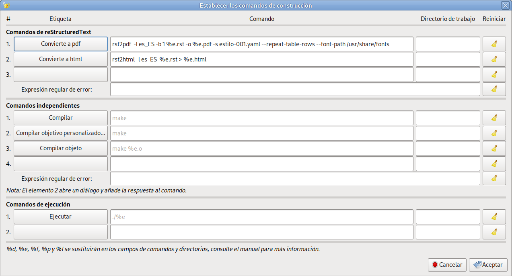

Comandos básicos para reStructuredText
| Autor: | Angel de la Iglesia Gonzalo |
|---|---|
| Versión/rev: | 0/1 |
| Fecha: | 20250407 |
| Copyright: | Este trabajo está bajo licencia Creative Commons BY-NC-SA 4.0 (https://creativecommons.org/licenses/by-nc-sa/4.0/deed.es) que te permite compartir, adaptar y redistribuir esta obra, siempre y cuando des crédito de manera adecuada a la obra original, no hagas uso con propósito comercial de la obra y si compartes tu nueva obra, lo hagas bajo esta misma licencia. |
| Asbstract: | This document is an introduction and a short tutorial on reStructuredText for obtaining complete documents in pdf or html and can serve as an introduction to writing documents with Sphinx. This document is not about Sphinx. Resumen: Este documento es una introducción y un pequeño tutorial sobre reStructuredText para la obtención de documentos completos en pdf o html y puede servir como una introducción a la escritura de documentos con Sphinx. Este documento no trata de Sphinx. |

Captura de la imágen de reStruredText en la página oficial de Docutils.
Índice
- 1 Introducción
- 2 Primeros pasos
- 3 Profundizando en ReST
- 4 Roles
- 5 Directivas
- 5.1 Exhortaciones (Admonitions)
- 5.2 Imágenes (Images)
- 5.3 Elementos del cuerpo del documento (Body elements)
- 5.3.1 Tema (Topic)
- 5.3.2 Barra lateral (Sidebar)
- 5.3.3 Bloque de líneas (line block)
- 5.3.4 Bloque literal interpretado (Parsed Literal Block)
- 5.3.5 Código (Code)
- 5.3.6 Matemáticas (Math)
- 5.3.7 Rúbrica o rótulo (Rubric)
- 5.3.8 Epígrafe (Epigraph)
- 5.3.9 Destacar (Highlights)
- 5.3.10 Cita extraída (Pull-Quote)
- 5.3.11 Párrafo compuesto (Compound Paragraph)
- 5.3.12 Contenedor (Container)
- 5.4 Tablas (Tables)
- 5.5 Partes del documento (Document Parts)
- 5.6 Referencias (References)
- 5.7 Directivas para sustitución (Directives for Substitution definitions)
- 5.8 Miscelaneos (Miscellaneous)
- 5.8.1 Incluir (Include)
- 5.8.2 Transferencia de datos sin procesar (Raw Data Pass-Through)
- 5.8.3 Clases (Class)
- 5.8.4 Funciones de texto interpretadas personalizadas (Custom Interpreted Text Roles)
- 5.8.5 Establecimiento del rol predeterminado del texto interpretado (Setting the Default Interpreted Text Role)
- 5.8.6 Metadatos (Metadata)
- 5.9 Opciones comunes (Common Options)
- 6 Comandos para la conversión de documentos con rst2xxx
- 7 Editores para ReST
- 8 Notas al documento (solo aplicable al pdf)
1 Introducción
reStructuredText es un lenguaje de marcado que permite escribir textos con formato (parecido al resultado que se obtiene con un procesador de texto) pero en el que nosotros escribimos los comandos de formateo en el mismo texto. Cualquier editor de texto plano sirve para convertir documentos medianamente complejos a formatos html, Latex, pdf, odt y otros.
Normalmente se utiliza reStructuredText como paso previo para escribir documentos mediante Sphinx que es un sistema de documentación muy flexible y utilizado por muchas personas en el mundo relacionados con python pero tambien por otros muchos que no se relacionan con python directamente. Muchas organizaciones aceptan documentación en este formato para múltiples fines (https://about.readthedocs.com/pricing/#/community, https://docs.readthedocs.com/platform/stable/).
reStructuredText pertenece a los llamados lenguajes de marcado que son sistemas de codificación de texto que especifica la estructura y el formato de un documento y las relaciones entre sus partes (índices o pies de página, por ejemplo) y son capaces de insertar referencias externas al documento, ya sea en el propio ordenador o en Internet. reStructuredText tiene una curva de aprendizaje no muy complicada y permite generar documentos bien formateados, incluso sin recurrir a otras herramienta, como sphinx, que permiten ampliarlo. Este documento pretende enseñarte a usar reStructuredText para generar documentos completos en html y pdf mediante los programas rst2html y rst2pdf.
Para instalar los programas necesarios para seguir los ejemplos de este documento deberás instalar los siguientes paquetes (seguramente algunos de ellos ya estarán en tu sistema) :
$ sudo apt install docutils-common docutils-doc python3-docutils \ python3-pybtex-docutils python3-recommonmark python3-pyphen \ python3-pygments hyphen-es rst2pdf
Muchas veces hago referencia al fichero fuente de este documento como ejemplo de lo que quiero obtener, pero generalmente el ejemplo se incluye en el propio texto y no será necesario tener abierto el fichero fuente para seguir las explicaciones (aunque es recomendable). Sobre todo al principio no te abrumes con los símbolos de marcado que todavía no conoces y ve avanzando haciendo los mismos ejemplos o similares de la forma que te propongo en el documento. También te recomiendo que en una primera lectura no abras los enlaces a medida que vas leyendo sino que lo hagas en una segunda o tercera lectura. Siempre los podrás abrir para resolver dudas o aumentar tu conocimiento sobre el tema. Te recomiendo, también, que veas el documento en html y en pdf porque algunas veces el resultado no es igual e incluso puede que en un formato la impresión sea correcta y en el otro formato produzca un error.
Como siempre la mejor documentación es la original. En este caso puedes encontrar la Documentación de docutils en https://docutils.sourceforge.io/docs/index.html y para rst2pdf el manual está en https://rst2pdf.org/static/manual.html, en html y en https://rst2pdf.org/static/manual.pdf, en pdf. Este documento pretende enseñarte a usar estos programas de una forma un poco más amigable que la documentación oficial. Intenta ser un tutorial de reStructuredText, de poco más de 100 páginas en un pdf, escrito con estos programas y que puedes ver el resultado en html o pdf así como el fichero fuente a partir del que se generan.
Advertencia
No soy un experto en reStructuredText, simplemente he aprendido un poco a como usarlo y este documento es un resumen que intento que sea útil.
Nota
Si estás viendo este documento en html verás que al principio de la página aparece ###Title### - Sección: ###Section### e igualmente al final de todo el documento verás ###Page###. Esto se explica en el apartado Cabeceras y Pies de página.
2 Primeros pasos
2.1 Títulos y secciones
Cuando escribimos un documento lo primero que solemos hacer es poner el título y crear secciones para organizar el texto [2] (Nota: Si cliqueas sobre el número que aparece en azul irás a la nota asociada y volviendo a cliquear en el mismo número que está a la izquierda de la nota volverás aquí).
| [2] | En español también se suele utilizar apartado o párrafo como sinónimos de sección. Verás que la presentación de la nota en html, si has utilizado rst2html, es justo a continuación del párrafo que la contiene y será una nota al final del documento si has convertido con rst2pdf. |
Para la creación de títulos, capítulos y secciones se pueden utilizar cualquiera de los siguientes caracteres como caracteres de subrayado de los títulos:
= - ` : ' " ~ ^ _ * + # < >
En general, basta subrayar el texto del título o sección con cualquiera de los caracteres anteriores hasta, al menos, la longitud del texto para establecer título. El nivel del título no tiene que ver con el orden en que he presentado anteriormente cada uno de los caracteres. Puedes elegir cualquiera. El convertidor [3] siempre ordena según el orden en el que hayas creado cada nivel automáticamente. Es decir, si eliges # como primer nivel (el primero que escribes) los caracteres ##...# siempre serán un título de nivel "1". De la misma forma si eliges * como símbolo para el segundo nivel, cada vez que escribas **...* se corresponderá con un nivel "2" y así sucesivamente.
| [3] | El convertidor es el programa que convierte el fichero fuente al formato deseado html, pdf u otros (rst2html o rst2pdf o los otros disponibles en tu sistema). |
Los dos primeros niveles se pueden subrayar por abajo y por encima para remarcar los niveles.
Es conveniente que elijas un criterio para ordenar los niveles y te mantengas en él. Como referencia útil, el manual de sphinx recomienda lo siguiente:
Código de ejemplo-001.rst
############## Parte o Título ############## ******** Capítulo ******** Sección ======= Subsección ---------- Subsubsección ^^^^^^^^^^^^^ Párrafo """""""
Que cuando lo convirtamos y lo abramos con un visor html o pdf se verá algo parecido a:

Código de ejemplo-001.rst convertido
2.2 Cómo convertir el fichero fuente
Puedes crear un fichero con el contenido del código de ejemplo-001.rst y salvarlo con un nombre como ejemplo-001.rst. Lo puedes convertir con cualquiera de los comandos:
rst2html rst2odt_prepstyles rst2html4 rst2pdf rst2html5 rst2pseudoxml rst-buildhtml rst2latex rst2s5 rstpep2html rst2man rst2xetex rst2odt rst2xml
Para ver lo que hacen (la mayoría son auto explicativos) puedes teclear man comando, así, además, podrás ver las opciones de cada comando. Posteriormente veremos las opciones más interesantes en el apartado Comandos para la conversión de documentos con rst2xxx
Por ejemplo para crear una página web tecleamos:
$ rst2html ejemplo-001.rst ejemplo-001.html
También se puede hacer:
$ rst2html ejemplo-001.rst > ejemplo-001.html
NOTA: prueba a utilizar rst2html4 y rst2html5 que funcionarán con este documento.
Y para crear un pdf hacemos:
$ rst2pdf ejemplo-001.rst -o ejemplo-001.pdf
o
$ rst2pdf ejemplo-001.rst > ejemplo-001.pdf
Nota: Fíjate que la manera de nombrar al fichero de salida varía según el comando que utilices. Solamente la redirección > funciona en los dos casos. Si no pones los argumentos para generar el fichero de salida verás que el comando de conversión imprime en la consola el texto del fichero convertido.
Además si quieres que algunas palabras reservadas que usan los conversores res2xx aparezcan en español (aviso en lugar de warning, consejo en lugar de hint, etc. tal como aparecen en el apartado Exhortaciones (Admonitions)) deberás utilizar, además, la opción -l es_ES.
$ rst2html -l es_ES ejemplo-001.rst ejemplo-001.html
y
$ rst2pdf -l es_ES ejemplo-001.rst -o ejemplo-001.pdf
Nota
Como veremos posteriormente, en mi sistema, funciona tanto utilizar es_ES como es para la localización del texto.
Advertencia
Si haces conversiones a pdf con rst2pdf es muy posible que ni el tipo de letra, ni el tamaño de letra, ni la separación silábica de los párrafos o el sangrado en las listas que tu obtienes sea como el que ves en mi pdf. Esto es debido al uso de Estilos que veremos posteriormente. No obstante y sin aplicar estilos verás que el pdf generado es muy correcto.
2.3 Párrafos
Un párrafo en reStructuredText (a partir de ahora lo identificaremos como ReST) es un texto que está separado de otro, al menos, por una línea en blanco. Así:
Esto es un texto escrito en tres líneas que solo es un párrafo. Y esto es otro párrafo que se escribe a continuación del anterior. Y este es un párrafo con sangría (*indent* en inglés). Y este párrafo vuelve a la columna 1.
Al convertir el fichero fuente que contiene este texto se ve como:
Esto es un texto escrito en tres líneas que solo es un párrafo.
Y esto es otro párrafo que se escribe a continuación del anterior.
Y este es un párrafo con sangría (indent en inglés).
Y este párrafo vuelve a la columna 1.
Fíjate en que los espacios en blanco entre algunas palabras de la primera línea son ignorados y las cuatro líneas en blanco que hay entre los dos párrafos, al convertir el fichero fuente, solo produce una línea en blanco.
Si quieres expresamente líneas en blanco para separar párrafos hay que poner el carácter | en la primera columna y dejar una línea en blanco antes y después del carácter de la barra vertical. El ejemplo anterior se escribe así:
Esto es un texto escrito en tres líneas que solo es un párrafo. | | | | Y esto es otro párrafo que se escribe a continuación del anterior pero con cuatro líneas en blanco antes. Y este es un párrafo con sangría (*indent* en inglés). Y este párrafo vuelve a la columna 1.
que al convertirlo se verá como:
Esto es un texto escrito en tres líneas que solo es un párrafo.
Y esto es otro párrafo que se escribe a continuación del anterior pero con cuatro líneas en blanco antes.
Y este es un párrafo con sangría (indent en inglés).
Y este párrafo vuelve a la columna 1.
Para forzar espacios en blanco es un poco más complicado. Hay que identificar un espacio forzado de unicode y escribir el alias dejando un espacio en blanco delante y detrás:
.. |c_b| unicode:: U+00A0 .. Espacio forzado Esto es un texto |c_b| |c_b| |c_b| |c_b| |c_b| |c_b| escrito en tres líneas que solo es un párrafo.
Que al convertirlo se verá como:
Esto es un texto escrito en tres líneas que solo es un párrafo.
La instrucción que aparece como:
.. |c_b| unicode:: U+00A0 .. Espacio forzado
solo hay que escribirla una vez en el fichero fuente, no importa antes o después de las sustituciones. c_b es una etiqueta que me he inventado y que funciona como un alias del carácter en blanco cuando está entre las barras verticales para crear un procedimiento de sustitución |c_b|.
Como resumen: un párrafo es una agrupación de texto que esta separado de otro párrafo por al menos una línea en blanco. Si hay más de una línea en blanco el convertidor ignora todas menos una. Los párrafos deben tener la misma sangría. Si no la tienen el párrafo sangrado aparecerá también sangrado en la salida. Los espacios en blanco entre las palabras de un párrafo son reducidos a un único blanco. Todas las líneas del mismo párrafo deben estar alineadas a la izquierda con el mismo nivel de sangría. Puede haber varios niveles de sangría en un documento.
Nota
En español el término indentar (indent en inglés) no está reconocido por el diccionario de la RAE. Debe traducirse por sangrar, sangría o sangrado. Pero en el mundo de los ordenadores se usa muy frecuentemente aunque, por ahora, es un palabro.
2.3.1 Comentarios
El texto:
.. Espacio forzado
que aparece al final de la línea es un comentario. También podría ir en la primera columna. Si los dos puntos aparecen en la primera y segunda columnas, todo lo que venga a continuación será un comentario hasta el siguiente párrafo. Si el siguiente párrafo está sangrado (al menos la primera columna es un espacio en blanco) el convertidor ignorará el texto y seguirá siendo un comentario.
.. esto es un comentario
y sigue aquí.
Que como (no) ves no aparece en el texto convertido.
Que como (no) ves no aparece en el texto convertido pero está en el fichero fuente.
Si sabes algo de ReST quizás te extrañará que un comentario empiece por ".. " (dos puntos y, al menos, un espacio en blanco) como empiezan algunos códigos de marcado de ReST. ¿Cómo sabe ReST que es un comentario? Pues precisamente porque lo que sigue al espacio en blanco no coincide con ningún código utilizado por ReST.
2.4 Formateo de texto
Al escribir cualquier documento es usual que queramos utilizar negrita o cursiva y, a veces, nos interesa escribir algún texto en un tipo de letra mono espaciado. La negrita se consigue encerrando el texto entre una pareja de asteriscos, la cursiva se obtiene encerrando la frase entre asteriscos (uno a cada lado), para letra mono espaciada la frase se encierra entre dobles acentos graves `` (ojo no son las dobles comillas que se obtienen, en el teclado español, con Mayúsculas + 2, son las comillas hacia atrás que hay que pulsar dos veces para que aparezcan una vez en la pantalla) tanto al comienzo como al final del texto.
El código fuente del párrafo anterior es:
Al escribir cualquier documento es usual que queramos utilizar **negrita** o *cursiva* y, a veces, nos interesa escribir ``algún texto en un tipo de letra mono espaciado``. La negrita se consigue encerrando el texto entre una pareja de asteriscos, la cursiva se obtiene encerrando la frase entre asteriscos (uno a cada lado), para letra mono espaciada la frase se encierra entre `dobles acentos graves <https://es.wikipedia.org/wiki/Acento_grave>`_ `` (ojo **no** son las dobles comillas que se obtienen, en el teclado español, con ``Mayúsculas + 2``, son las comillas hacia atrás que hay que pulsar dos veces para que aparezcan una vez en la pantalla) tanto al comienzo como al final del texto.
Si lo que quieres es escribir *un texto entre asteriscos* tienes que utilizar la barra hacia atrás \ [4] como carácter de escape, tal como se ve en el fichero fuente de este párrafo.
Si lo que quieres es escribir \*un texto entre asteriscos\* tienes que utilizar la barra hacia atrás \\ [#]_ como carácter de escape, tal como se ve en el fichero fuente de este párrafo.
| [4] | También hay que escapar la barra hacia atrás para que se imprima. |
Otra forma de formatear texto es para la representación literal de texto (en inglés muchas veces se utiliza el término verbatim). Por ejemplo, para representar código fuente. El siguiente ejemplo muestra un programa escrito en rust.
fn main() {
println!("Hola ¿Cómo estás?");
}
Para imprimir lo anterior el fichero fuente contiene:
::
fn main() {
println!("Hola ¿Cómo estás?");
}
Los dos puntos repetidos :: en la primera columna indica que todo lo que venga a continuación y esté sangrado sera representado literalmente hasta justo antes del primer texto que aparezca en la primera columna.
Para simplificar un poco la escritura cuando en el texto se utiliza naturalmente los dos puntos en una frase que continúa en el párrafo siguiente se puede escribir los :: al final de la frase como en el siguiente ejemplo:
En un lugar de la mancha de cuyo nombre ...
que en el fichero fuente puedes ver como:
... siguiente se puede escribir los ``::`` al final de la frase como
en el siguiente ejemplo::
En un lugar de la mancha de cuyo nombre ...
Para el código fuente de muchos lenguajes de programación ReST dispone de una forma que embellece la presentación del código resaltando la sintaxis. El ejemplo de rust que vimos anteriormente se ve como:
fn main() { println!("Hola ¿Cómo estás?"); }
En el fichero fuente puedes ver que para obtener lo anterior se escribe:
.. code:: rust
fn main() {
println!("Hola ¿Cómo estás?");
}
En lugar de rust puedes poner el nombre del lenguaje que tú utilices. La lista de lenguajes soportados la puedes ver en: https://pygments.org/languages/.
Con la representación literal de texto hay que tener cuidado porque, literalmente, hace lo que dice que hace. Si escribes una línea de texto muy larga, que tiene por ejemplo 43 palabras (tal como esta) y lo conviertes obtendrás algo como esto [5]:
Con la representación literal de texto hay que tener cuidado porque, literalmente, hace lo que dice que hace. Si escribes una línea de texto muy larga, que tiene por ejemplo 43 palabras (tal como esta) y lo conviertes obtendrás algo como esto::
| [5] | Realmente depende de la opción --fit-literal-mode=MODE que utilices al convertir el fichero con rst2pdf. Lo puedes ver en el apartado Comando para convertir a pdf mediante rst2pdf . En html lo verás como una línea que prosigue a la derecha de la pantalla y que podrás ver desplazándote hacia la derecha. |
Literalmente ha escrito una línea y lo ha ajustado a una línea de texto en el fichero de salida. Para que no ocurra eso deberás partir la línea en tantas líneas como sean necesarias para que la lectura sea cómoda. Por ejemplo, representando los retornos de carro:
Con la representación literal de texto hay que tener cuidado↵ porque, literalmente, hace lo que dice que hace. Si escribes una↵ línea de texto muy larga, que tiene por ejemplo 43 palabras (tal↵ como esta) y lo conviertes obtendrás algo como esto::↵
Algunos editores tienen comandos específicos para hacer esto. Por ejemplo en neovim el comando ''gq'' seguido de la tecla ↓ y en Geany el comando es CTRL j que aparece en Editar → Formato → Reestructurar líneas/bloque dividen la línea larga al tamaño de línea que tengan definido. En cualquier caso, asegúrate de que las líneas comienzan en la misma columna para que no aparezcan sangradas.
2.4.1 Consideraciones al formateo de texto
Si aparecen asteriscos o comillas graves en el texto, el conversor se puede confundir con esos delimitadores de marcado en línea. Para representar estos caracteres de marcado como texto normal estos deben escaparse con una barra invertida, tal como hemos visto anteriormente (carácter de escape).
Ten en cuenta algunas restricciones de este tipo marcado:
- No puede estar anidado,
- El contenido no puede comenzar o terminar con un espacio en blanco: * hola* imprime * hola*, no hola.
- Los asteriscos o comillas graves deben estar separado del texto por caracteres que no sean palabras (blancos). Se puede usar un carácter de escape con barra invertida para comerte el espacio de separación: Esta\ *es*\ *una*\ palabra produce: Estaesunapalabra, mientras que Esta*es**una*palabra produce: Esta*es**una*palabra.
2.5 Listas
ReST dispone de varios tipos de listas que son versátiles y muy fáciles de crear.
2.5.1 Lista ordenadas
Las listas ordenadas pueden ordenarse con números (no tienen límite, puedes hacer la lista tan grande como quieras (si tienes suficiente tiempo ...). Pueden ordenarse con letras mayúsculas o minúsculas (puedes escribir hasta la Z/z). También puedes crear una lista con números romanos en mayúsculas o minúsculas hasta el número 4999 (MMMMCMXCIX o mmmmcmxcix. No sé el por qué de este límite).
Cada carácter que identifica el orden puede seguirse con un punto a continuación, entre paréntesis o con solo el paréntesis de cierre. Hay que dejar al menos un espacio en blanco antes de escribir el texto de la lista.
Nota
El convertidor puede hacer que la salida para imprimir no sea la que esperas.
A continuación te presento varios ejemplos:
- Primer elemento de la lista
- Segundo elemento de la lista
- Tercer elemento de la lista
que se genera con:
1. Primer elemento de la lista 2. Segundo elemento de la lista 3. Tercer elemento de la lista
Con letras mayúsculas
- Primer elemento de la lista
- Segundo elemento de la lista
- Tercer elemento de la lista
que se genera con:
A. Primer elemento de la lista B. Segundo elemento de la lista C. Tercer elemento de la lista
Con letras minúsculas
- Primer elemento de la lista
- Segundo elemento de la lista
- Tercer elemento de la lista
que se genera con:
(a) Primer elemento de la lista (b) Segundo elemento de la lista (c) Tercer elemento de la lista
Nota
En mi caso, al convertir a pdf o html la lista aparece como:
- en lugar de (a)
- en lugar de (b)
- en lugar de (c)
Con letras números romanos
- Primer elemento de la lista
- Segundo elemento de la lista
- Tercer elemento de la lista
que se genera con:
i. Primer elemento de la lista ii. Segundo elemento de la lista iii. Tercer elemento de la lista
Nota
Con mi sistema, en la conversión a pdf no hace bien la tabulación después del número romano, en html sí lo hace bien. Si lo ves bien en pdf es porque he aplicado un estilo que recojo en el apartado Estilos.
Se pueden anidar distintos tipos de listas y empezar por valores arbitrarios (pero luego hay que seguir ordenadamente) y es obligatorio que la lista anidada esté separada de la lista padre por líneas en blanco:
Con letras mayúsculas y números
Primer elemento de la lista
- sub primer elemento
- sub segundo elemento
Segundo elemento de la lista
- sub primer elemento
- sub segundo elemento
Tercer elemento de la lista
que se genera con:
Con letras mayúsculas y números A. Primer elemento de la lista 5) sub primer elemento 6) sub segundo elemento B. Segundo elemento de la lista n. sub primer elemento o. sub segundo elemento C. Tercer elemento de la lista
Nota: La Ñ o ñ no sirven para ordenar una lista.
También es importante saber que se pueden generar listas con numeración automática:
- Primer elemento de la lista
- Segundo elemento de la lista
- Tercer elemento de la lista
que se genera con:
#. Primer elemento de la lista #. Segundo elemento de la lista #. Tercer elemento de la lista
La documentación de ReST dice que se recomienda que el carácter enumerador del primer elemento de la lista sea el primer representante de la lista ("1", "A", "a", "I" o "i"). Aunque se reconocerán otros valores iniciales, es posible que el formato de salida (html, pdf, odt, latex ...) no los admita.
Se pueden hacer listas sangradas. El sangrado se puede hacer con un carácter en blanco o más. Hay que tener cuidado con el sangrado porque si, por ejemplo, el primer elemento de una lista está sangrado con dos espacios en blanco y en el segundo elemento pones tres espacios en blanco se creará, e inicializará, una lista nueva. Si vuelves al sangrado anterior será una nueva lista y se reiniciará también, como en el ejemplo siguiente:
- Primer elemento.
- Segundo elemento.
- Tercer elemento.
- Cuarto elemento.
Que se ha generado con:
#. Primer elemento. #. Segundo elemento. #. Tercer elemento. #. Cuarto elemento.
Si hubiéramos puesto todo con el mismo nivel de sangrado (dos espacios en blanco) obtendríamos:
- Primer elemento.
- Segundo elemento.
- Tercer elemento.
- Cuarto elemento.
2.5.2 Listas con viñetas (o listas no ordenadas)
Una lista de viñetas, o lista no ordenada, puede empezar con cualquiera de los siguientes caracteres, *, + o -, seguido de un carácter en blanco. Por ejemplo:
Esta es la primera línea con viñeta. Es obligatorio dejar una línea en blanco antes de la viñeta, pero no necesario (aunque recomendable por legibilidad del fichero fuente) dejar una línea en blanco antes de la siguiente viñeta.
Esta es la segunda viñeta.
Esta es la tercera viñeta.
- Esta es una viñeta con sangría (necesita que dejes una línea en blanco antes de esta en el fichero fuente).
- Esta es la segunda viñeta con sangría.
- Puedes utilizar cualquiera de los caracteres *, + o - para las viñetas y el conversor generará una viñeta con uno de los caracteres que tiene disponibles, no necesariamente el que tú has utilizado.
Y esto vuelve a ser texto normal.
En el fichero fuente el texto anterior se escribe como:
* Esta es la primera línea con viñeta. Es obligatorio dejar una(no↵) línea en blanco antes de la viñeta, pero no necesario(no↵) (aunque recomendable por legibilidad del fichero fuente)(no↵) dejar una línea en blanco antes de la siguiente viñeta.↵ * Esta es la segunda viñeta.↵ * Esta es la tercera viñeta.↵ - Esta es una viñeta con sangría (necesita que dejes una(no↵) línea en blanco antes de esta en el fichero fuente).↵ - Esta es la segunda viñeta con sangría.↵ + Puedes utilizar cualquiera de los caracteres ``*``, ``+`` o(no↵) ``-`` para las viñetas y el conversor generará una viñeta(no↵) con uno de los caracteres que tiene disponibles, no(no↵) necesariamente el que tú has utilizado.↵ Y esto vuelve a ser texto normal.↵
Nota
En el ejemplo anterior he forzado los retornos de carro (↵) para la presentación literal en el fichero fuente, pero las líneas con viñetas no se pueden partir con retornos de carro (no↵).
2.5.3 Listas de definición (o de diccionario)
Estas son listas en las que una palabra o grupo de palabras se define en el texto siguiente.
Para construir la lista se escribe(n) la(s) palabra(s) a definir y en la línea siguiente con, al menos, un carácter en blanco al principio de la línea se escribe la definición. La definición solo puede tener una línea de texto.
- Definición:
- La segunda acepción de la RAE dice que es una "Proposición que expone con claridad y exactitud los caracteres genéricos y diferenciales de algo material o inmaterial".
- Convertidor a pdf en ReST:
- Para convertir el fichero fuente ejemplo-006.rst a pdf el comando a utilizar es rst2pdf ejemplo-006.rst -o ejemplo-006.pdf.
Que se obtiene del siguiente texto en el fichero fuente:
Definición: La segunda acepción de la *RAE* dice que es una "*Proposición que expone con claridad y exactitud los caracteres genéricos y diferenciales de algo material o inmaterial*". Convertidor a *pdf* en *ReST*: Para convertir el fichero fuente ``ejemplo-006.rst`` a *pdf* el comando a utilizar es ``rst2pdf ejemplo-006.rst -o ejemplo-006.pdf``.
2.5.4 Lista de campos
Estas listas representan información que se estructura en campos para presentar la información. Cada campo queda encerrado entre : delante y detrás. La información relativa a ese campo se escribe a continuación con un espacio en blanco antes de comenzar el texto. Por ejemplo:
| Fecha: | 2024 09 10 |
|---|---|
| Versión: | 1 |
| Autor: | Juan Bravo Valiente |
que se genera con:
:Fecha: 2024 09 10 :Versión: 1 :Autor: Juan Bravo Valiente
2.5.5 Lista de opciones
Estas lista están pensadas para listar las opciones de un comando:
- Cortas de POSIX. Consisten en un guión y una letra que representa una opción y una descripción separada por , al menos, un tabulador en blanco.
- Largas de POSIX. Consisten en dos guiones y una palabra descriptiva y una descripción separada por , al menos, un tabulador en blanco.
- Para DOS/VMS. Consiste en una barra inclinada, espacio y una letra o palabra y una descripción separada por , al menos, un tabulador en blanco.
Por ejemplo, para el comando hace_algo:
| hace_algo: |
|---|
| -a | Opción "a" |
| -b file | Las opciones pueden tener argumentos y descripciones largas |
| --long | Admite la opción larga. |
| --input=file | Las opciones largas pueden tener argumentos |
| /V | Estilo DOS/VMS |
que se genera con:
:hace_algo: -a Opción "a" -b file Las opciones pueden tener argumentos y descripciones largas --long Admite la opción larga. --input=file Las opciones largas pueden tener argumentos /V Estilo DOS/VMS
2.6 Bloques de texto sin formatear
Como hemos visto ReST une las líneas que separamos mediante un retorno de carro (↵) siempre que formen lo que el programa entiende por un párrafo. Esto algunas veces es un inconveniente ya que si queremos escribir líneas cortas, justo una a continuación de la otra como por ejemplo en una dirección:
Para conseguir este efecto, el fichero fuente debe tener una barra vertical en la primera columna y un espacio en blanco antes del texto:
| Don Miguel de Cervantes | Calle Doña Dulcinea 7, 3ºD | Alcalá de Henares
También sirve para escribir versos:
generado con:
| Al olmo viejo, hendido por el rayo | y en su mitad podrido, | con las lluvias de abril y el sol de mayo | algunas hojas verdes le han salido. | | Comienzo del poema *A un olmo seco* de Antonio Machado |
También se puede utilizar :: para crear un bloque literal que mantendrá los retornos de carro y los espacios o tabulaciones.
Al olmo viejo, hendido por el rayo
y en su mitad podrido,
con las lluvias de abril y el sol de mayo
algunas hojas verdes le han salido.
Comienzo del poema *A un olmo seco* de Antonio Machado
Fíjate que el texto aparece en un marco con fondo de color si has utilizado rst2pdf y un marco transparente si has utilizado rst2html.
Para generarlo en el fichero fuente se ha escrito:
:: Al olmo viejo, hendido por el rayo y en su mitad podrido, con las lluvias de abril y el sol de mayo algunas hojas verdes le han salido. Comienzo del poema *A un olmo seco* de Antonio Machado
Realmente esto ya lo vimos en Formateo de texto pero aplicado a código.
2.7 Transiciones
Un marcador de transición es un conjunto de 4 o más caracteres de los que vimos para Títulos y secciones y que generan una línea de lado a lado del texto.
Puede generarse con ----. Siempre al principio de la línea.
Puede generarse con ++++. Siempre al principio de la línea.
Puede generarse con ==========. Siempre al principio de la línea.
que se generan con:
---- ++++ ====
3 Profundizando en ReST
En este capítulo vamos ver unos cuantos comandos más que nos van a permitir escribir documentos útiles.
3.1 Referencias internas en el documento
Las referencias internas del documento se generan con un guión bajo justo al final de la palabra que queremos usar como la lanzadera del enlace:
referencia_
En el caso de que la lanzadera comprenda varias palabras, estas se tienen que agrupar mediante acentos graves:
`referencias internas`_
Las referencias son enlaces a una parte del texto que quedan resaltadas y que, poniendo el cursor encima de la referencia, indica a donde va a saltar. El salto se producirá al párrafo siguiente donde pongas la línea:
.. _`referencias internas`:
En este caso he puesto la posición del salto .. _`referencias internas` justo antes de esta sección de forma que cuando pulses sobre referencias internas vayas al comienzo del apartado.
3.1.1 Referencias implícitas
ReST dispone de un mecanismo para referenciar títulos de apartados y a (que todavía no hemos visto) Notas a pie de página y Citas. Para referenciar un apartado se pone el título del apartado entre acentos graves seguido del guión bajo. por ejemplo para ir al apartado padre de este subapartado el enlace es Referencias internas en el documento que se ha generado con:
`Referencias internas en el documento`_
Y para ir al índice Índice la referencia se genera como:
Índice_
Veremos como he generado el Índice en el apartado Tabla de contenido (Table of contents).
Es útil saber que las referencias las podemos hacer en mayúsculas, minúsculas o mezclas tal como puedes ver aquí: Referencias implícitas, REFERENCIAS IMPLÍCITAS, REFERENCIAS implícitas o ReFeReNcIaS iMpLíCiTaS . Todas llevan al mismo apartado. Que se han generado con:
Es útil saber que las referencias las podemos hacer en mayúsculas, minúsculas o mezclas tal como puedes ver aquí: `Referencias implícitas`_, `REFERENCIAS IMPLÍCITAS`_, `REFERENCIAS implícitas`_ `ReFeReNcIaS iMpLíCiTaS`_ . Todas llevan al mismo apartado. Que se han generado con:
3.2 Referencias externas al documento
Las referencias externas son enlaces a documentos o páginas web que están fuera del documento o que están en internet.
3.2.1 Referencia explícita
Una referencia explícita es literalmente la dirección a donde queremos ir, por ejemplo la página de doc-utils es https://docutils.sourceforge.io/. Basta pulsar sobre el enlace para ir a la página web. También puedes acceder a un documento externo al documento pero que está en tu ordenador, por ejemplo: file:///usr/share/doc/docutils-doc/docs/index.html , abrirá el documento Docutils Project Documentation Overview si está instalado en tu ordenador. En el fichero fuente se escribe la dirección literalmente como se escribe en el texto visualizado (incluyendo el https:// o el file:///, en este caso con tres barras inclinadas).
3.2.2 Referencia incrustadas
Si no quieres que la dirección aparezca explícitamente en el texto puedes referenciar una dirección con una etiqueta que te dirija a la página deseada. Por ejemplo Docutils te llevará a la misma página en el enlace del apartado anterior.
Que se genera con:
Por ejemplo Docutils_ te llevará a la misma página en el enlace del apartado anterior. .. _Docutils: https://docutils.sourceforge.io/
En la que la referencia en el texto se genera poniendo el guión bajo al final de la palabra (o palabras enmarcadas entre acentos graves "`") mientras que en la línea que especifica la dirección la etiqueta comienza con el guión bajo.
3.2.2.1 Referencias embebidas
También se puede generar con un enlace embebido. Por ejemplo wiki de ReStructuredText se ha generado con:
También se puede generar con un enlace embebido. Por ejemplo `wiki de ReStructuredText <https://es.wikipedia.org/wiki/ReStructuredText>`_ se ha generado con:
La dirección de la página web se tiene que encerrar entre los caracteres de menor y mayor < ... > y todo el texto y direción entre comillas graves simples "`".
3.2.3 Referencias anónimas
Nota: En la documentación oficial de ReST se dice que las referencias anónimas: Son particularmente útiles en documentos breves o documentos de un solo fichero fuente. Sin embargo, es fácil abusar de esta característica y puede causar que el texto fuente sea ilegible y que los documentos no se puedan mantener. Se aconseja usarlas con moderación. Las podemos considerar como referencias de un solo uso.
Para crear una referencia anónima a un enlace se hace con dos guiones bajos al final de la frase entre acentos graves. La dirección del enlace se puede escribir de dos formas con .. __: https://www.dirección.com tal como se ve el el fuente de este párrafo:
Para crear `una referencia anónima a un enlace`__ se hace con dos guiones bajos al final de la frase entre acentos graves. La dirección del enlace se puede escribir de dos formas con ``.. __: https://www.dirección.com`` tal como se ve el el fuente de este párrafo: .. __: https://www.debian.org
La otra forma de redireccionar una referencia anónima es empezando la línea con dos guiones bajos, un espacio en blanco y la dirección referenciada. En el fichero fuente de este párrafo se ve:
La otra `forma de redireccionar una referencia anónima`__ es empezando la línea con dos guiones bajos, un espacio en blanco y la dirección referenciada. En el fichero fuente de este párrafo se ve: __ https://www.linux.org
No podemos llamar otra vez a `una referencia anónima a un enlace`__ porque la conversión nos dará un error.
Tampoco podemos referenciar `forma de redireccionar una referencia anónima`__ porque las referencias están caducadas.
3.3 Notas a pie de página
Las notas a pie de página se imprimen dependiendo del conversor utilizado. Si utilizas rst2html la nota se imprime justo después del párrafo que la contiene, si utilizas rst2latex al generar el pdf la nota a pie de página aparece al final de la página donde está la llamada a la nota, por el contrario si utilizas rst2pdf las notas al pie de página aparecen al final del documento. NOTA: este es el comportamiento por defecto de los conversores, pero puedes modificar el comprotamiento con las opciones de conversión que se ven en el apartado Comandos para la conversión de documentos con rst2xxx, aunque no son muy versátiles (haz pruebas para ver como se comporta).
Las referencias a las notas al pie se pueden generar de cuatro formas diferentes:
- Con uno o más números: ejemplo caso [1], caso [25].
- Auto numeradas: ejemplo caso [6], caso [7].
- Etiqueta auto numerada: ejemplo [8] [9] (Nota: La etiqueta no se ve en el texto impreso).
- Con símbolos generados automáticamente: ejemplo caso Símbolo 1 [*], caso Símbolo 2 [†], caso Símbolo 3 [‡].
| [1] | (1, 2, 3) Esta es la nota al caso 1. |
| [25] | (1, 2, 3) Esta es la nota al caso 25. |
| [6] | Esta es la nota al caso generado automáticamente en primer lugar. |
| [7] | Esta es la nota al caso generado automáticamente en segundo lugar. |
| [8] | (1, 2) Esta es la nota al caso generado automáticamente con etiqueta en primer lugar. |
| [9] | (1, 2) Esta es la nota al caso generado automáticamente con etiqueta en segundo lugar. |
| [*] | Esta es la primera etiqueta con símbolos 1 generados automáticamente. |
| [†] | Esta es la segunda etiqueta con símbolos 2 generados automáticamente. |
| [‡] | Esta es la tercera etiqueta con símbolos 3 generados automáticamente. |
que se ha generado con:
Las referencias a las notas al pie se pueden generar de cuatro formas diferentes: 1) Con uno o más números: ejemplo caso [1]_, caso [25]_. 2) Auto numeradas: ejemplo caso [#]_, caso [#]_. 3) Etiqueta auto numerada: ejemplo [#etiqueta1]_ [#etiqueta2]_ (**Nota**: La etiqueta no se ve en el texto impreso). 4) Con símbolos generados automáticamente: ejemplo caso Símbolo 1 [*]_, caso Símbolo 2 [*]_, caso Símbolo 3 [*]_. .. [1] Esta es la nota al caso 1. .. [25] Esta es la nota al caso 25. .. [#] Esta es la nota al caso generado automáticamente en primer lugar. .. [#] Esta es la nota al caso generado automáticamente en segundo lugar. .. [#etiqueta1] Esta es la nota al caso generado automáticamente con etiqueta en primer lugar. .. [#etiqueta2] Esta es la nota al caso generado automáticamente con etiqueta en segundo lugar. .. [*] Esta es la primera etiqueta con símbolos 1 generados automáticamente. .. [*] Esta es la segunda etiqueta con símbolos 2 generados automáticamente. .. [*] Esta es la tercera etiqueta con símbolos 3 generados automáticamente.
Fíjate que hemos forzado la nota 1 [1] con el número [1]_ y después la nota 25 [25] con [25]_ y cuando hemos puesto la numeración automática con [#]_ la numeración comienza con 6 y sigue correlativamente 7, 8 y 9 incluso en la numeración automática con etiqueta (el caso de [#etiqueta1]_ y [#etiqueta2]_). ¿Por qué ha pasado la numeración automática de 1 a 6?.
La razón es que en el primer párrafo del apartado Títulos y secciones había una nota numerada automáticamente y después hay tres notas automáticas autonumeradas ([3], [4] y [5]) hasta llegar a este apartado. Como aquí hemos forzado empezar con la nota [1]_ el convertidor asigna la numeración libre hasta que llegue a la nota [25]_. por lo que la secuencia en este párrafo es [1], [25], [6], [7], [#etiqueta1]_ [8] y [#etiqueta2]_ [9].
Que se ha generado con:
La razón es que en el primer párrafo del apartado `Títulos y secciones`_ había una nota numerada automáticamente y después hay tres notas automáticas *autonumeradas* ([3]_, [4]_ y [5]_) hasta llegar a este apartado. Como aquí hemos forzado empezar con la nota ``[1]_`` el convertidor asigna la numeración libre hasta que llegue a la nota ``[25]_``. por lo que la secuencia en este párrafo es [1]_, [25]_, [6]_, [7]_, ``[#etiqueta1]_`` [#etiqueta1]_ y ``[#etiqueta2]_`` [#etiqueta2]_.
Fíjate que la numeración automática para la nota 3, 4, 5, 6 y 7 se han escrito explícitamente [3]_, [4]_, [5]_, [6]_, [7]_.
Fíjate que cuando vas a la nota [1] aparece a continuación (1, 2, 3) esto es porque la referencia a la nota [1] aparece tres veces en el documento y cada número referencia a la posición donde aparece.
3.4 Citas
Las citas (o menciones) son como las notas a pie de página pero con etiquetas que no son numéricas ni con símbolos, son etiquetas alfanuméricas, que no pueden tener espacios en blanco, tales como [REF-001] o [llamada-001] o [REF-002] y [ref-003].
| [REF-001] | (1, 2) El texto de esta cita. |
| [llamada-001] | (1, 2) El texto de la llamada (que no vuelve). |
| [REF-002] | (1, 2) la última llamada. |
| [ref-003] | (1, 2) Llamada en minúsculas (que no vuelve). |
Que se ha generado con:
Las citas (o menciones) son como las notas a pie de página pero con etiquetas que no son numéricas ni con símbolos, son etiquetas alfanuméricas, que no pueden tener espacios en blanco, tales como [REF-001]_ o [llamada]_ o [REF-002]_ y [ref-003]_. .. [REF-001] El texto de esta cita. .. [llamada-001] El texto de la llamada (que no vuelve). .. [REF-002] la última llamada. .. [ref-003] Llamada en minúsculas (que no vuelve).
Nota: Para que la cita pueda volver al origen, si utilizo rst2pdf las etiquetas tienen que empezar con mayúsculas. Cuando voy a [llamada-001] o [ref-003] en el pdf no puedo volver, en cambio con [REF-001] y [REF-002] si puedo volver.
3.5 Cabeceras y Pies de página
Las cabeceras de página son textos que aparecerán en la parte superior de cada página impresa o al principio de la página web. Los pies de página son los textos que aparecerán en la parte inferior de cada página impresa o al final de la página web.
Las cabeceras y pies se generan con:
.. header:: Este es el texto de la cabecera. Se pueden utilizar *claves mágicas* entre el texto. .. footer:: Este es el texto del pie de página. Se pueden utilizar *claves mágicas* entre el texto.
También se pueden generar como:
.. header:: Este es el texto de la cabecera. Se pueden utilizar *claves mágicas* entre el texto. .. footer:: Este es el texto del pie de página. Se pueden utilizar *claves mágicas* entre el texto.
Advertencia
Si utilizas las claves mágicas (magic tokens en inglés) para rst2pdf y generas un html con rst2html lo que se verás en el fichero html generado serán las claves mágicas (no su contenido) que producen las cabeceras y pies de páginas en el pdf; las cabeceras al principio de la página y los pies al final de la página web. Si vas a utilizar html no utilices las claves mágicas.
3.5.1 Claves mágicas para cabeceras y pies de página
- ###Page###
- Sirve para imprimir el número de la página actual.
- ###Title###
- Imprime el título del documento.
- ###Section###
- Imprime el título de la sección de la página actual.
- ###SectNum###
- Imprime el número de la sección de la página actual, siempre que se haya utilizado la directiva setnum.
Por ejemplo las cabeceras y pies de este documento se generan con el siguiente texto:
################################################## Comandos básicos para *re*\ ``Structured``\ *Text* ################################################## :Autor: Angel de la Iglesia Gonzalo :Versión/rev: 0/1 :Fecha: |fecha| :Copyright: Este trabajo está bajo licencia *Creative Commons BY-NC-SA 4.0* (https://creativecommons.org/licenses/by-nc-sa/4.0/deed.es) que te permite compartir, adaptar y redistribuir esta obra, siempre y cuando des crédito de manera adecuada a la obra original, no hagas uso con propósito comercial de la obra y si compartes tu nueva obra, lo hagas bajo esta misma licencia. :Asbstract: This document is an introduction and a short tutorial on *re*\ ``Structured``\ *Text* for obtaining complete documents in *pdf* or *html* and can serve as an introduction to writing documents with *Sphinx*. This document is not about *Sphinx*. **Resumen**: Este documento es una introducción y un pequeño tutorial sobre *re*\ ``Structured``\ *Text* para la obtención de documentos completos en *pdf* o *html* y puede servir como una introducción a la escritura de documentos con *Sphinx*. Este documento no trata de *Sphinx*. .. sectnum:: .. header:: ###Title### - Sección: ###Section### .. footer:: ###Page###
Como ves también se produce la generación de apartados numerados (.. sectnum::).
3.5.2 Referencias en las cabeceras y pies de página
En las cabeceras y pies de página se pueden utilizar referencias como en cualquier otra parte del documento. Por ejemplo si conviertes el siguiente texto con rst2pdf y con rst2html verás el resultado tanto en un pdf o en una página html.
.. header:: Debian__ | linux__ | rst__ | rst2pdf__ __ https://www.debian.org/index.es.html __ https://www.linux.org/ __ https://docutils.sourceforge.io/rst.html __ https://rst2pdf.org/ Esto es el texto normal.
Aquí hemos visto referencias externas pero podemos utilizar cualquiera de las referencias que hemos visto anteriormente.
3.6 Tablas
Las tablas en ReST no son ni muy versátiles ni muy amigables, pero si es posible crear tablas para presentar la información de una forma ordenada.
3.6.1 Tablas sencillas (o simples)
Las tablas sencillas son fáciles de generar.
Cada columna tiene una serie de símbolos = que determinan la columna. De columna a columna hay que dejar, al menos, un espacio en blanco (es mejor dejar dos o más espacios en blanco por comodidad de lectura en el fichero fuente). La serie de = tienen que pertenecer a la primera y a la última línea de la tabla. Se puede hacer una cabecera de la tabla usando una serie de - debajo del texto de la cabecera y debe cubrir (sin espacios en blanco) la anchura de todas las columnas. A continuación se escribe el título de cada columna, separándolos con espacios en blanco, y se subraya con los símbolos =. Debajo se escriben los valores de cada fila separando cada valor con espacios en blanco y tantas filas como sea necesario. Si, por ejemplo, en la primera columna necesitas que esta aparezca vacía, en el fichero fuente tienes que escribir "\ " (barra para atrás + espacio en blanco). La barra para atrás es un carácter de escape que vimos en el apartado Formateo de texto.
Si en el fichero fuente tecleas esto:
======== ========= =============== Tabla de codificación ASCII ------------------------------------ ASCII Símbolo Significado ======== ========= =============== 00 NULL carácter nulo 01 SOH inicio encabezado \ ... ... ======== ========= ===============
se imprimirá esto:
| Tabla de codificación ASCII | ||
|---|---|---|
| ASCII | Símbolo | Significado |
| 00 | NULL | carácter nulo |
| 01 | SOH | inicio encabezado |
| ... | ... | |
Podemos dividir las columnas descontinuando la línea de -, como aquí:
======== ========= =============== Tabla ASCII ------------------- --------------- ASCII Símbolo Significado ======== ========= =============== 00 NULL carácter nulo 01 SOH inicio encabezado \ ... ... ======== ========= ===============
Para ver:
| Tabla ASCII | ||
|---|---|---|
| ASCII | Símbolo | Significado |
| 00 | NULL | carácter nulo |
| 01 | SOH | inicio encabezado |
| ... | ... | |
Otro ejemplo, sacado de la documentación oficial de ReST es el siguiente:
===== ===== ====== Inputs Output ------------ ------ A B A or B ===== ===== ====== False False False True False True False True True True True True ===== ===== ======
que imprime:
| Inputs | Output | |
|---|---|---|
| A | B | A or B |
| False | False | False |
| True | False | True |
| False | True | True |
| True | True | True |
Te recomiendo que juegues con estas tablas y veas que ocurre si quitas o pones espacios en blanco, - o =. Verás que la creación de la tabla no es muy amigable. El número de - o = debe coincidir en todas las columnas. ¿Y los espacios en blanco? Pruébalo como ejercicio.
3.6.2 Tablas de rejilla (grid table en inglés)
Las tablas de rejilla tal como indica su nombre se construyen representando la tabla mediante una rejilla que contiene el texto. Una fila se signos = subrayan la cabecera y las esquinas se marcan con +. Las líneas verticales se representan con | y las horizontales con -. Es posible unir celdas entre columnas o filas simplemente quitando los | o los -. Digo simplemente porque cuando lo hagas verás que no es muy amigable. Truco: Para crear la tabla es mejor pulsar la tecla de insert, para poner el teclado en modo sobreescribir, para evitar que inserte caracteres y que sobrescriba directamente para crear el texto y los bordes de la tabla. El texto dentro de una celda es tratado como un párrafo normal de ReST (los ↵ son ignorados).
| Cabecera 1 | Cabecera 2 | Cabecera 3 | Cabecera 4 |
|---|---|---|---|
| Texto f1c1 |
|
Aquí se unen las celdas de la fila aunque haya tres líneas | |
| texto f2c1 | |||
| texto f3c1 | Texto f3c2 | Texto f3C3 | Texto f3c4 |
que se ha generado con:
+---------------+---------------+--------------+--------------+ | Cabecera 1 | Cabecera 2 | Cabecera 3 | Cabecera 4 | +===============+===============+==============+==============+ | Texto f1c1 | * Texto f1c2 | Aquí se unen las celdas | +---------------+ * Texto c2 | de la fila aunque | | texto f2c1 | * Texto c2 | haya tres líneas | +---------------+---------------+--------------+--------------+ | texto f3c1 | Texto f3c2 | Texto f3C3 | Texto f3c4 | +---------------+---------------+--------------+--------------+
Como ves en la columana 2 la primera celda agrupa dos filas y hemos creado una lista dentro.
3.6.3 Tablas de valores separados por comas (Tablas CSV)
Las tablas de valores separados por comas son las que están pensadas para representar tablas que se exportan de bases de datos, hojas de cálculo o generados por programas dedicados que generan datos separados por comas.
El siguiente programa en rust genera una tabla de valores para los valores de x, x^2 y x^3.
fn main() { let mut f_i: f64; for i in (-20..=20).step_by(2) { f_i = i as f64; println!( "{:.3},{:.3},{:.3}", (f_i / 10.0), (f_i / 10.0) * (f_i / 10.0), (f_i / 10.0) * (f_i / 10.0) * (f_i / 10.0) ); } }
| x | x^2 | x^3 |
|---|---|---|
| -2.000 | 4.000 | -8.000 |
| -1.800 | 3.240 | -5.832 |
| -1.600 | 2.560 | -4.096 |
| -1.400 | 1.960 | -2.744 |
| -1.200 | 1.440 | -1.728 |
| -1.000 | 1.000 | -1.000 |
| -0.800 | 0.640 | -0.512 |
| -0.600 | 0.360 | -0.216 |
| -0.400 | 0.160 | -0.064 |
| -0.200 | 0.040 | -0.008 |
| 0.000 | 0.000 | 0.000 |
| 0.200 | 0.040 | 0.008 |
| 0.400 | 0.160 | 0.064 |
| 0.600 | 0.360 | 0.216 |
| 0.800 | 0.640 | 0.512 |
| 1.000 | 1.000 | 1.000 |
| 1.200 | 1.440 | 1.728 |
| 1.400 | 1.960 | 2.744 |
| 1.600 | 2.560 | 4.096 |
| 1.800 | 3.240 | 5.832 |
| 2.000 | 4.000 | 8.000 |
que se ha generado con el siguiente contenido en el fichero fuente:
.. csv-table:: Valores de `x`, `x^2` y `x^3` :header: `x`, `x^2`, `x^3` :widths: 1 1 1 :width: 50% -2.000,4.000,-8.000 -1.800,3.240,-5.832 -1.600,2.560,-4.096 -1.400,1.960,-2.744 -1.200,1.440,-1.728 -1.000,1.000,-1.000 -0.800,0.640,-0.512 -0.600,0.360,-0.216 -0.400,0.160,-0.064 -0.200,0.040,-0.008 0.000,0.000,0.000 0.200,0.040,0.008 0.400,0.160,0.064 0.600,0.360,0.216 0.800,0.640,0.512 1.000,1.000,1.000 1.200,1.440,1.728 1.400,1.960,2.744 1.600,2.560,4.096 1.800,3.240,5.832 2.000,4.000,8.000
El texto despues de .. csv-table:: es opcional y, en caso de existir, será el título de la tabla.
:header: permite establecer las cabeceras de cada columna.
:widths: es la anchura relativa de cada una de las columnas. Prueba a poner un 2 en una columna y ver que es lo que pasa.
:width: solo funciona en html. Representa el % de la anchura de la página debe ocupar la tabla.
3.6.4 Tablas de listas
Las tablas creadas con listas son fáciles de crear teniendo en cuenta que siempre se generan con listas de dos niveles. El primer nivel determina el número de filas (incluida la cabecera) y el segundo nivel determina el contenido de cada celda. Por ejemplo:
Tabla generada por una lista de 3 columnas Columna 1 Columna 2 Columna 3 Celda11 Celda12 Celda13 Celda21 Celda22 Celda23 Celda31 Celda32, que puede tener más texto que solo una o dos palabras. Y texto en otra línea (que tiene que estar sangrada para que no produzca error). Celda33
Se genera con:
.. list-table:: Tabla generada por una lista de 3 columnas :widths: 20 10 10 :header-rows: 1 * - Columna 1 - Columna 2 - Columna 3 * - Celda11 - Celda12 - Celda13 * - Celda21 - Celda22 - Celda23 * - Celda31 - Celda32, que puede tener más texto que solo una o dos palabras. Y texto en otra línea (que tiene que estar sangrada para que no produzca error). - Celda33
Fíjate que mediante :header-rows: 1 se consigue que la primera fila se marque en negrita. Si pones :header-rows: 2 ¿qué ocurre?. Pruébalo.
3.7 Matemáticas
En ReST se puede escribir en lenguaje matemático. ¿Quien no conoce e = mc2?
Hay dos formas de crear una fórmula:
- utilizando una directiva en la que el programa embebe los tipos (fuentes) y representa la fórmula como texto (por lo que se puede copiar) tal como lo que se muestra a continuación:
- Utilizando notación in line escribiendo en el fichero fuente: :math:`e = m c^2` que se ve como: e = mc2, que ha creado la fórmula como una imagen y se imprimirá peor que en el caso anterior y, además, no se puede copiar como texto.
Para escribir fórmulas matemáticas ReST utiliza la sintaxis del lenguaje LaTeX. Las fórmulas se pueden escribir en la misma línea tal como (2sen(x))/(3cos(x)) o en un párrafo dedicado:
o
Si quieres que las fórmulas aparezcan centradas, cuando utilices rst2pdf, hay que utilizar la directiva container. Utilizandola las dos ecuaciones anteriores quedan como:
o
que se han generado con:
Si quieres que las fórmulas aparezcan centradas, cuando utilices *rst2pdf*, hay que utilizar la directiva container. Utilizandola las dos ecuaciones anteriores quedan como: .. container:: center .. math:: \psi(r) = e^{-2r} o .. container:: center .. math:: \frac{2 \pm \sqrt{7}}{3}
En html aparecen centradas en los dos casos.
Un resumen de la sintaxis de LaTeX para escribir matemáticas la puedes ver en: file:///usr/share/doc/docutils-doc/docs/ref/rst/mathematics.html en tu ordenador, si tienes una instalación Debian o en https://docutils.sourceforge.io/docs/ref/rst/mathematics.html si lo buscas en internet.
Si utilizas rst2pdf tienes que tener cuidado porque si pretendes escribir una fórmula o ecuación multilínea tal como
.. math:: \begin{align} a + b &= c\\ d + e &= f\\ g + h &= i\\ \end{align}
la verás correctamente si conviertes a html, por ejemplo, pero si utilizas rst2pdf verás algo como esto:
NOTA: recuerda en html lo verás bien.
y, si miras en la salida del conversor verás que aparece [ERROR] math_flowable.py:58 rst2pdf's math directive does not support multiple lines. Es decir que rst2pdf no soporta ecuaciones con multilíneas.
Para evitar el error puedes dividir la ecuación como:
.. container:: center .. math:: a + b &= c d + e &= f g + h &= i
para obtener:
Por otro lado verás que el tipo de letra utilizado por el conversor rst2html es muy elegante, mientras que el conversor rst2pdf es menos elegante (en mi opinión, claro). Esto es debido a que el conversor rst2pdf utiliza el tipo de letra usado por matplotlib que es DejaVu Sans. NOTA: puedes seguir esto en https://github.com/rst2pdf/rst2pdf/issues/1028.
Puedes ver como resuelvo esto en mis documentos viendo el apartado Impresión con los tipos de letra predefinidas o con tipos de letra de LATEX más abajo.
¡IMPORTANTE si tu documento tiene muchas fórmulas!
Si lo que necesitas es utilizar muchas fórmulas matemáticas lo más conveniente es que utilices LATEX o XeTeX (este último permite símbolos Unicode) o xelatex (que es XeTeX con formato de LATEX) que están diseñados para eso. También puedes utilizar Sphinx, aunque, en mi opinión, TEX y sus derivados son mejores y más versátiles para la generación de documentos con mucha "matemáticas".
Si tu documento tiene fórmulas, pero estas no son lo fundamental en el documento, puedes usar ReST para generar ficheros .tex que producen documentos muy bien formateados.
rst2pdf da errores en cuanto la fórmula es un poco compleja y no llega a generar ni si quiera un documento en pdf. Por ejemplo (tomado de la página oficial https://docutils.sourceforge.io/docs/ref/rst/mathematics.rst) el fichero matemáticas.rst, en el que se ha eliminado la primera línea del fichero original, que hace referencia a una cabecera que no usamos aquí, es un ejemplo que puedes convertir con distintos conversores para ver como se hace, o no se hace, la conversión y su grado de fiabilidad. Lo puedes ver en el subdirectorio ./mat-rst2pdf-xetex-xelatex-latex-html y los resultados que se obtienen con diversos convertidores. Ahí podrás ver también un pequeño documento Comandos_de_creación.pdf explicativo.
3.7.1 Impresión con los tipos de letra predefinidas o con tipos de letra de LATEX
Es muy posible que no veas las fórmulas con el mismo tipo de letra que uso yo en el pdf. Las dos figuras siguientes muestran la impresión que genera rst2pdf por defecto (aunque uses un fichero de estilos como el que utilizo) y la que consigo yo en este documento.
_

Figura con el Tipo de letra predefinido
_

Figura con el Tipo de letra mathtext.fontset: cm
Para conseguir el tipo de letra cm (computer modern de LATEX) hay que crear un fichero de configuración para matplotlib en /home/usuario/.config/matplotlib con el nombre matplotlibrc y con el siguiente contenido.
######### Mis modificaciones para que los plots de matplotlib ######### aparezcan de tipo serif ######### y las fuentes sean cm de LATEX para rst2pdf font.family: serif mathtext.fontset: cm
NOTA: font.family: serif no es necesario para rst2pdf. Sirve para la presentación de texto en los plots producidos por matplotlib.
4 Roles
Los roles son sustituciones que se hacen en la línea (inline) para realizar una acción mediante el lenguaje de marcado. En realidad ya hemos usado alguno de ellos, como veremos a continuación.
Por ejemplo podemos escribir esta es la base y este es el superíndice y de la misma forma esta es la base y este es el subíndice.
que se obtiene con:
Por ejemplo podemos escribir ``esta es la base`` :superscript:`y este es el superíndice` y de la misma forma ``esta es la base`` :subscript:`y este es el subíndice`.
Los roles estándar son:
- :emphasis:
- :literal:
- :code:
- :math:
- :pep-reference:
- :rfc-reference:
- :strong:
- :subscript:
- :superscript:
- :title-reference:
Para crear el efecto, como has visto en el ejemplo anterior, hay que escribir el rol entre los símbolos de ":" y a continuación el texto, sin espacio, entre comillas graves simples "`".
Algunos los hemos visto en su forma simplificada:
:emphasis:`Texto enfatizado (cursiva)` produce Texto enfatizado (cursiva) que es lo mismo que que produce *Texto enfatizado (cursiva)* como ya vimos.
E igualmente, :strong:`Texto más enfatizado (negrita)` produce Texto más enfatizado (negrita) que es lo mismo que que produce **Texto más enfatizado (negrita)** como ya vimos.
:literal:`Texto literal` produce Texto literal, que es lo mismo que se obtiene con ``Texto literal`` -> Texto literal.
:code: lo vimos en embellecimiento de código.
:math: lo vimos en Matemáticas.
:title-reference: Según la documentación oficial de ReST este rol se utiliza para describir los títulos de libros, publicaciones y otros materiales.
Por ejemplo :title-reference:`Un documento sobre ReST` produce Un documento sobre ReST que se ve semejante a Un documento sobre ReST que se ha generado con *Un documento sobre ReST*. Sin embargo desde el punto de vista de ReST son dos entidades distintas que pueden tener un tratamiento diferente según el conversor utilizado.
:pep-reference: y :rfc-reference: son, básicamente para documentación referida a Python.
Por comodidad podemos crear alias de los roles para que nos sea más fácil escribir nuestro documento, así si escribimos en nuestro fichero fuente:
.. role:: si(superscript) .. role:: sb(subscript)
A partir de ahora podemos utilizar si como rol superscrip (superíndice) y sb como rol subscript (dubíndice).
Por ejemplo con el siguiente texto:
Hola :si:`Superíndice` y ahora :sb:`El subíndice`.
crearemos
Hola Superíndice y ahora El subíndice.
La documentación oficial de ReST la puede ver en tu ordenador (si tienes Debian) en,
file:///usr/share/doc/docutils-doc/docs/ref/rst/roles.html#standard-roles.
o en internet en,
https://docutils.sourceforge.io/docs/ref/rst/roles.html#standard-roles.
Si miras en la documentación oficial verás que algunos de los roles tienen asociados alias que son más cómodos si es que los utilizas frecuentemente. Pero como hemos visto anteriormente tú puedes crear los que consideres más convenientes.
5 Directivas
En este capítulo seguiré, en algunos casos, casi literalmente la documentación oficial de ReST que puedes ver en https://docutils.sourceforge.io/docs/ref/rst/directives.html o en tu ordenador en file:///usr/share/doc/docutils-doc/docs/ref/rst/directives.html donde podrás ver información más detallada. Aquí intentaré hacer más sencillo el aprendizaje mediante ejemplos.
Profundizaremos en algunos comandos y veremos algunos nuevos.
Ya hemos visto alguna directiva usada por ReST, por ejemplo:
.. code:: rust .. header:: Esta es la cabecera .. footer:: Este es un pie de página .. contents:: .. setnum::
Las directivas tienen la siguiente sintaxis:
.. tipo_de_directiva:: Bloque de la directiva
Las directivas comienzan con un inicio de marcado explícito (un punto en las dos primeras columnas de texto y un espacio), seguido del tipo de directiva y dos veces el signo ":" dos puntos (identificado como el "marcador de directiva") y un espacio en blanco. El bloque de directiva comienza después del marcador de directiva e incluye todas las líneas sangradas posteriores. El bloque de directivas se divide en argumentos, opciones (una lista de campos) y contenido (en ese orden), cualquiera de los cuales puede, o no, aparecer.
Las directivas son los elementos que dan potencia a ReST como lenguaje para el formateo de texto.
5.1 Exhortaciones (Admonitions)
Exhortación es una traducción de la palabra inglesa admonition que puede englobar a todas las variantes que la palabra en inglés describe (es decir, son el nombre del tipo de directiva que utilizaremos en cada caso correspondiente):
- attention
- atención
- caution
- precaución
- danger
- peligro
- error
- error
- hint
- sugerencia
- important
- importante
- note
- nota
- tip
- consejo
- warning
- advertencia
Las exhortaciones se muestran de la siguiente forma:
¡Atención!
Todas las exhortaciones pueden tener una línea de aclaración.
- También se pueden incluir listas, siempre respetando la sangría.
- Y está es la última línea.
¡Precaución!
Esto va después
¡PELIGRO!
Esto va después
Error
Esto va después
Sugerencia
Esto va después
Importante
Esto va después
Nota
Esto va después
Consejo
Esto va después
Advertencia
Esto va después
¡Atención! Esta advertencia está personalizada.
Contenido de la advertencia.
Que se ha generado con el siguiente texto:
.. attention:: Todas las exhortaciones pueden tener una línea de aclaración. - También se pueden incluir listas, siempre respetando la sangría. - Y está es la última línea. .. caution:: Esto va después .. DANGER:: Esto va después .. error:: Esto va después .. hint:: Esto va después .. important:: Esto va después .. note:: Esto va después .. tip:: Esto va después .. warning:: Esto va después .. admonition:: **¡Atención!** Esta *advertencia* está personalizada. Contenido de la advertencia.
Fíjate que los conversores han traducido al español las cabeceras de la exhortación ya que en la conversión he utilizado la opción -l es_ES. Ver el apartado Cómo convertir el fichero fuente o el apartado Comandos para la conversión de documentos con rst2xxx.
5.2 Imágenes (Images)
Hay dos clases de directivas para imágenes: Imagen y Figura.
No todos los formatos de imagen están permitidos. PNG y JPG son los que están admitidos para todos los formatos de documentos convertidos. SVG y PDF también están soportados para casi todos los formatos convertidos.
5.2.1 Imagen (Image)
Una imagen como:
Se genera con:
.. image:: imágenes/ReStructuredText_Logo.svg.png :scale: 150 % :align: center :target: https://en.m.wikipedia.org/wiki/File:ReStructuredText_Logo.svg
{kind=link}
.. _image: y el path completo hasta el fichero de la imagen. Si el fichero lo tenemos en el subdirectorio imágenes justo debajo de donde tenemos el fichero fuente el path se escribe como imágenes/fichero.png
Las opciones disponibles para presentar una imagen (y una figura) son:
:alt: texto
Texto alternativo: una breve descripción de la imagen, mostrada por aplicaciones que no pueden mostrar imágenes, o hablada por aplicaciones para usuarios con discapacidades visuales.
:height: valor
La altura deseada de la imagen. Se utiliza para reservar espacio o escalar la imagen verticalmente. Cuando también se especifica la opción :scale:, se combinan. Por ejemplo, una altura de 200px y una escala de 50 es equivalente a una altura de 100px sin escala.
:width: valor o porcentaje del ancho de línea actual
El ancho de la imagen. Se utiliza para reservar espacio o escalar la imagen horizontalmente. Al igual que con :height:, cuando también se especifica la opción :scale:, se combinan.
:scale: porcentaje entero (el símbolo "%" es opcional)
Es el factor de escala de la imagen. El valor predeterminado es "100 %", es decir, sin escala.
:align: "top" arriba, "middle" en el medio, "bottom" abajo, "left" izquiera, "center" centro o "right" derecha
Los valores "left", "center" y "right" controlan la alineación horizontal de una imagen a la izquierda, al centro o a la derecha, lo que permite que la imagen flote y que el texto fluya a su alrededor. El comportamiento específico depende del navegador o del software de renderizado utilizado.
:target: text (URI o nombre de referencia)
Convierte la imagen en una referencia de hipervínculo (cliqueable) [10]. El argumento de la opción puede ser un URI (relativo o absoluto) o un nombre de referencia con sufijo de guión bajo (por ejemplo, `un nombre`_). Puedes ver un ejemplo de este comportamiento en este mismo documento si sigues el enlace anterior y vas a la portada del documento; si pinchas en la imagen iras a la página oficial de Docutils.
| [10] | Cliqueable es un palabro. Clicar si está admitido por la RAE. |
que se ha generado con:
.. _`un ejemplo de este comportamiento`: .. figure:: imágenes/capturaRST-home.png :width: 100% :align: center :target: https://docutils.sourceforge.io/rst.html **Captura de la imágen de reStruredText en la página oficial de** Docutils_.
Y que está al principio del fichero fuente de este documento.
Podrás ver que el efecto puede ser distinto (o ignorado) según el convertidor que utilices.
5.2.2 Figura (Figure)
Una figura es como una image, incluidas las opciones, y consta de
- los datos propios de la imagen incluidas las opciones vistas en el apartado Imagen (Image).
- un título opcional que de ser un único párrafo y
- una leyenda opcional que puede tener elementos en el cuerpo que sean parte del lenguaje ReST.
En el caso de los conversores que generan páginas (rest2pdf por ejemplo), las figuras pueden colocarse en una posición diferente a la que piensas.
Como ejemplo podemos ver que con:
.. figure:: imágenes/Road_Warning_signs_around_the_World.svg.png :scale: 150 % :alt: colores de las señales de advertencia de peligro en carretera Colores de las señales de advertencia de peligro en carretera (Este es el rótulo de la figura (un párrafo sencillo)) La leyenda consiste en todos los elementos que siguen al rótulo. En este caso la leyenda consiste en este párrafo y la siguiente tabla: +--------------------------------+-----------------------+ | Símbolo | Significado | +================================+=======================+ | .. image:: imágenes/curva.png | Curva peligrosa | | :scale: 150% | | +--------------------------------+-----------------------+ | .. image:: imágenes/radia.png | Radiación | | :scale: 50% | | +--------------------------------+-----------------------+ | .. image:: imágenes/laser.png | Laser | | :scale: 50% | | +--------------------------------+-----------------------+
se genera:

Colores de las señales de advertencia de peligro en carretera (Este es el rótulo de la figura (un párrafo sencillo))
La leyenda consiste en todos los elementos que siguen al rótulo. En este caso la leyenda consiste en este párrafo y la siguiente tabla:
| Símbolo | Significado |
|---|---|

|
Curva peligrosa |

|
Radiación |

|
Laser |
5.3 Elementos del cuerpo del documento (Body elements)
5.3.1 Tema (Topic)
Un tema es como una cita con un título o una sección independiente sin subsecciones. Puedes utilizar la directiva .. topic:: para indicar una idea independiente que está separada del flujo del documento. Los temas pueden aparecer en cualquier lugar donde pueda aparecer una sección. No puede haber temas (topic) anidados.
El único argumento de la directiva se interpreta como el título del tema; la siguiente línea debe estar en blanco. Todas las líneas siguientes forman el cuerpo del tema, que se interpretan como elementos del cuerpo. Por ejemplo:
Título del tema
Las líneas sangradas después de ..topic:: constituyen el cuerpo del tema.
Se obtiene con:
.. topic:: Título del tema Las líneas sangradas después de ``..topic::`` constituyen el cuerpo del tema.
NOTA: El resultado visual se aprecia mejor con el conversor rst2html que con el rst2pdf.
NOTA: Los temas (topic) no aparecen el la tabla de contenido o índice del documento.
5.3.2 Barra lateral (Sidebar)
Las barras laterales (sidebar) son como documentos paralelos en miniatura que aparecen dentro del documento y proporcionan material relacionado o de referencia. Una barra lateral suele estar desplazada por un borde y flota al costado de la página; el texto principal del documento puede fluir alrededor de ella.
Las barras laterales también se pueden comparar con notas al pie de página superpuestas; su contenido está fuera del flujo del texto principal del documento.
Las barras laterales pueden aparecer en cualquier lugar donde pueda aparecer una sección. Los elementos del cuerpo (incluidas las barras laterales) no pueden contener barras laterales anidadas.
El único argumento de la directiva se interpreta como el título de la barra lateral, que puede ir seguido de una opción de subtítulo (ver a continuación); la siguiente línea debe estar en blanco. Todas las líneas posteriores forman el cuerpo de la barra lateral, que se interpreta como elementos del cuerpo. Por ejemplo:
que se obtiene con:
.. sidebar:: Título (que es opcional) de la barra lateral :subtitle: Subtítulo (también opcional) en la barra lateral Las líneas sangradas que siguen al Título o subtítulo comprenden el cuerpo de la barra lateral y se interpretan como elementos del cuerpo.
NOTA: El resultado visual se aprecia mejor con el conversor rst2html que con el rst2pdf.
5.3.3 Bloque de líneas (line block)
La directiva .. line-block:: construye un elemento en el que los saltos de línea y la sangría inicial son importantes . Es equivalente a un bloque literal interpretado con una representación diferente: normalmente en una tipografía utilizada en el texto normal en lugar de una tipografía monoespaciada o de máquina de escribir (que se obtiene con ::) y no con sangría automática.
Los bloques de líneas (.. line-block::) son útiles para bloques de direcciones y versos (poesía, letras de canciones, etc.), donde la estructura de las líneas es importante. Por ejemplo, aquí hay un clásico (de los Monty Python):
"Para mi amada Lassie: Un poema en su cumpleaños número 17", de Ewan McTeagle (para Lassie O'Shea):
que se obtine con:
.. line-block:: Prestame un par de chelines hasta el jueves. Estoy completamente sin dinero. Pero estoy esperando un giro postal y te lo puedo devolver tan pronto como llegue. Con cariño, Ewan.
Fíjate que ocurre si cambias .. line-block:: por ::,
Prestame un par de chelines hasta el jueves.
Estoy completamente sin dinero.
Pero estoy esperando un giro postal y te lo puedo devolver
tan pronto como llegue.
Con cariño, Ewan.
El texto aparece con letra monoespaciada.
5.3.4 Bloque literal interpretado (Parsed Literal Block)
A diferencia de un bloque literal normal, la directiva .. parsed-literal:: construye un bloque literal donde el texto permite marcado normal en ReST, tal como referencias internas o externas, cursiva, negrita, etc, es decir, aunque es literal interpreta los signos de marcado. Es equivalente a un bloque literal con una representación diferente, normalmente en una tipografía monoespaciada o de máquina de escribir. Uno de los usos frecuentes de los bloques literales interpretados es para agregar hipervínculos a ejemplos de código.
Sin embargo, se debe tener cuidado con el texto, ya que se reconoce el marcado y no hay protección contra la interpretación de los símbolos del marcado. Es posible que se necesiten barras invertidas \ para evitar una interpretación no deseada. Y debido a que la interpretación elimina los caracteres de marcado, también es posible que se necesiten espacios en blanco adicionales.
Volvamos atrás y generemos un bloque literal ::, el mismo bloque con .. line-block:: y con .. parsed-literal::. El texto a considerar en los tres casos es:
El texto bajo una de las directivas_ que produce un bloque de texto *interpretado*, usando ``.. parsed-literal::`` que permite referenciar a `Código (Code)`_. Y texto como *re*\ ``Structured``\ *Text*
que con :: produce:
El texto bajo una de las directivas_ que produce un bloque de texto *interpretado*, usando ``.. parsed-literal::`` que permite referenciar a `Código (Code)`_. Y texto como *re*\ ``Structured``\ *Text*
y con .. line-block:: produce:
Vemos que con :: no se producen los enlaces, aparece literalmente el símbolo del enlace (el subrayado bajo _) mientras que con .. line-block:: si aparecen los enlaces, pero los tipos de letra no son monoespacio. Para conseguir enlaces en texto con tipo de letra monoespacio o de tipo máquina de escribir podemos utilizar la directiva .. parsed-literal::.
Efectivamente si lo hacemos con .. parsed-literal:: obtenemos:
El texto bajo una de las directivas que produce un bloque de texto interpretado, usando .. parsed-literal:: que permite referenciar a Código (Code). Y texto como reStructuredText
Si deseas evitar que se reconozca el marcado en un bloque literal interpretado, debes protegerlo con una barra \ antes de él. Fíjate como hemos construido reStructuredText y la importancia del espacio en blanco después de la barra.
Por ejemplo, si quieres utilizar el comando $ cp *.back *.~ /Borrame_luego necesitas escapar los asteriscos, si no lo haces,
.. parsed-literal:: $ cp *.back *.~ /Borrame_luego se producirá:
$ cp *.back *.~ /Borrame_luego
que producirá un warning en el html y que los asteriscos se impriman en color en el pdf (ya que los programas conversores detectan un error al querer poner un pedazo de texto en cursiva, pero sin seguir las reglas de ReST).
Para escapar los asteriscos hay que poner la barra \ antes de los asteriscos.
.. parsed-literal:: $ cp \*.back \*.~ /Borrame_luego
Y así, obtenemos, tanto en el html como en el pdf:
$ cp *.back *.~ /Borrame_luego
.. parsed-literal:: permite utilizar el marcado ReST (énfasis, hipervínculos, etc.) en bloques de líneas que solemos utilizar para representar código o instrucciones en documentos relacionados con ordenadores.
Nota: .. parsed-literal:: no permite el embellecimiento del código. La directiva .. code:: lenguaje, que veremos a continuación, sí, pero no permite embeber marcado (referencias, cursiva, negrita, etc).
5.3.5 Código (Code)
Ya vimos en embellecimiento de código como se puede declarar un bloque de texto como código.
La directiva .. code:: lenguaje construye un bloque literal de código creado con determinado lenguaje. El lenguaje es opcional. Si se especifica el lenguaje del código, el resaltador de sintaxis de Pygments analiza el contenido y los tokens del bloque de texto y produce una salida coloreada de acuerdo a la gramática del lenguaje.
La identificación del lenguaje es opcional. Si no se especifica el lenguaje el bloque de código no se embellece con Pygments.
Se pueden utilizar las siguientes opciones:
:number-lines: [integer] (número de línea de inicio)
Funciona con rst2html pero no con rst2pdf
:linenos: (sin valor)
Funciona con rst2pdf pero no con rst2html
Por ejemplo (código extraído de https://doc.rust-lang.org/book/ch05-02-example-structs.html)
.. code:: rust fn main() { let width1 = 30; let height1 = 50; println!( "The area of the rectangle is {} square pixels.", area(width1, height1) ); } fn area(width: u32, height: u32) -> u32 { width * height }
proporciona:
fn main() { let width1 = 30; let height1 = 50; println!( "The area of the rectangle is {} square pixels.", area(width1, height1) ); } fn area(width: u32, height: u32) -> u32 { width * height }
Y si no especificamos el lenguaje
.. code:: fn main() { let width1 = 30; let height1 = 50; println!( "The area of the rectangle is {} square pixels.", area(width1, height1) ); } fn area(width: u32, height: u32) -> u32 { width * height }
obtenemos:
fn main() {
let width1 = 30;
let height1 = 50;
println!(
"The area of the rectangle is {} square pixels.",
area(width1, height1)
);
}
fn area(width: u32, height: u32) -> u32 {
width * height
}
Y podemos numerar las líneas empezando en 100 (por ejemplo):
.. code:: rust :number-lines: 100 fn main() { let width1 = 30; let height1 = 50; println!( "The area of the rectangle is {} square pixels.", area(width1, height1) ); } fn area(width: u32, height: u32) -> u32 { width * height }
proporciona (solo lo verás en html, en pdf no aparece):
100 fn main() { 101 let width1 = 30; 102 let height1 = 50; 103 104 println!( 105 "The area of the rectangle is {} square pixels.", 106 area(width1, height1) 107 ); 108 } 109 110 fn area(width: u32, height: u32) -> u32 { 111 width * height 112 }
Para verlo en pdf (en html saldrá un warning y lo presentará) hay que cambiar :number-lines: 100 por :linenos: ( fíjate que en este caso empecerá en 1),
.. code:: rust :linenos: fn main() { let width1 = 30; let height1 = 50; println!( "The area of the rectangle is {} square pixels.", area(width1, height1) ); } fn area(width: u32, height: u32) -> u32 { width * height }
proporciona (solo lo verás en bien en pdf):
Para escribir código en línea establecemos un role (por ejemplo para rust):
.. role:: mi_rust(code) :language: rust
Por ejemplo println!("El valor de alfa es: {}", alfa); se consigue con:
Por ejemplo :mi_rust:`println!("El valor de alfa es: {}", alfa);` se consigue con:
5.3.6 Matemáticas (Math)
Ya vimos esta directiva en el apartado Matemáticas.
La directiva "math" inserta bloques con contenido matemático (fórmulas, ecuaciones, etc.) en el documento. El formato de entrada es la sintaxis matemática de LaTeX con soporte para símbolos Unicode, por ejemplo:
.. class:: center .. math:: α_t(i) = P(O_1, O_2, … O_t, q_t = S_i λ)
produce:
NOTA: Fíjate que hemos utilizado la .. class:: center para centrar la ecuación. También podríamos haber usado .. container:: center.
El soporte está limitado a un subconjunto de LaTeX debido a la conversión requerida para muchos formatos de salida producidos por los conversores. Es por esto que puedas ver diferentes resultados dependiendo del formato de salida del documento.
5.3.7 Rúbrica o rótulo (Rubric)
Una rúbrica o rótulo es como un título, encabezado o similar, en un manuscrito, libro, etc., que se ve en rojo o que se distingue claramente del resto del texto.
Por ejemplo
.. rubric:: -Está es la rúbrica que ejemplifica este rótulo en el documento.
presenta:
Está es la rúbrica que ejemplifica este rótulo en el documento.
Una rúbrica es como un encabezado informal que no corresponde a la estructura del documento.
5.3.8 Epígrafe (Epigraph)
Un epígrafe es una inscripción breve apropiada para el texto. Es, a menudo, una cita o un poema, al comienzo de un documento o una sección.
La directiva .. epigraph:: produce una cita de la clase epigrafe. Por ejemplo, esta entrada:
.. epigraph:: Nuestra verdadera y única propiedad son los huesos. --Ramón Gómez de la Serna
produce
Nuestra verdadera y única propiedad son los huesos.
—Ramón Gómez de la Serna
Nota: el texto del epígrafe está sangrado con respecto al texto normal.
Nota: los dos guiones -- producen el alineamiento a la derecha del texto que viene a continuación. Tiene qué estar al mismo nivel de sangrado que el texto del epígrafe.
5.3.9 Destacar (Highlights)
Los puntos destacados resumen los puntos principales de un documento o sección y suelen consistir una lista.
La directiva .. highlights:: produce una cita de la clase highlights. Es parecido a la directiva anterior y genera una lista sangrada para destacar los puntos más interesantes.
Ejemplo de lo que vamos a ver a continuación
Apartado primero
Apartado segundo
Apartado ercero
Apartado cuarto
Que se ha generado con:
.. highlights:: Ejemplo de lo que vamos a ver a continuación Apartado primero Apartado segundo Apartado ercero Apartado cuarto
Verás que el texto destacado aparece sangrado con respecto al texto normal.
5.3.10 Cita extraída (Pull-Quote)
Una cita destacada es una pequeña selección de texto "extraida y citada", normalmente en un tipo de letra más grande. Las citas destacadas se utilizan para atraer la atención, especialmente en artículos largos.
La directiva "pull-quote" produce una cita en bloque de la clase "pull-quote". Consulta el epígrafe anterior para ver un ejemplo análogo.
Esto debería ser la "Cita extraída"
Esto debería ser la "Cita extraída" en la parte del cuerpo de texto.
que se obtiene con:
.. pull-quote:: Esto debería ser la "Cita extraída" Esto debería ser la "Cita extraída" en la parte del cuerpo de texto.
Yo no noto ninguna diferencia respecto al texto normal, salvo el sangrado, en la conversión con rst2pdf y rst2html.
5.3.11 Párrafo compuesto (Compound Paragraph)
La directiva .. compound:: se utiliza para crear un párrafo compuesto, que es un único párrafo lógico que contiene varios elementos físicos en el cuerpo, como párrafos simples, bloques literales, tablas, listas, etc., en lugar de contener directamente texto y elementos en línea. Por ejemplo:
.. compound:: El comando 'rm' es muy peligroso. Si inicias sesión como root y tecleas:: cd / rm -rf * borrarás todo el contenido de su sistema de archivos.
produce
El comando 'rm' es muy peligroso. Si inicias sesión como root y tecleas:
cd / rm -rf *
borrarás todo el contenido de su sistema de archivos.
En el ejemplo anterior, un bloque literal está "incrustado" (con ::) dentro de una oración que comienza en un párrafo físico y termina en otro.
5.3.12 Contenedor (Container)
La directiva "container" rodea su contenido (elementos arbitrarios del cuerpo) con un elemento "container" genérico a nivel de bloque. Combinado con los argumentos del atributo "classes" opcionales, este es un mecanismo de extensión para usuarios y aplicaciones. Por ejemplo:
Se consigue con:
.. container:: center Este párrafo se imprime centrado.
Y el siguiente párrafo se alinea a la derecha.
Que se obtiene con:
. container:: right
Este párrafo se imprime alineado a la derecha.
Advertencia
Esto solo funciona con rst2pdf, con la conversión a html rst2html no funciona.
5.4 Tablas (Tables)
Ya vimos como crear Tablas. Ahora profundizaremos, sobre todo, con las opciones disponibles.
A veces, las tablas de ReST son incómodas de escribir incluso si los datos de la tabla están en un formato estándar y fácilmente disponibles.
Las capacidades de configuración de las tablas no son ni variadas ni flexibles, pero permiten generar tablas que muestran la información de forma ordenada y con una estética aceptable.
ReST dispone de la directiva .. csv-table:: para datos separados por comas (CSV) para representar tablas de valores obtenidos por programas informáticos, bases de datos u hojas de cálculo.
5.4.1 Tabla (Table)
.. table:: Título de la tabla
El Título de la tabla es opcional.
.. table:: dispone de las siguientes opciones:
:align: left, center o right
Es la alineación horizontal de la tabla en la página web. Izquierda, centro o derecha. No parece hacer nada en rst2pdf
:width: longitud o porcentaje
Establece el ancho de la tabla en la longitud especificada o el porcentaje del ancho de línea. Si se omite, el conversor determina el ancho de la tabla en función de su contenido o del ancho de las columnas.
:widths: auto, grid o una lista de números enteros
Establece explícitamente el ancho de las columnas. Especifica los anchos relativos si se utiliza con la opción width. Valores posibles:
auto
Delega la determinación del ancho de las columnas al backend (LaTeX, el navegador HTML, ...).grid
Determina el ancho de las columnas a partir del ancho de las columnas de entrada (en caracteres).lista de números enteros
Debe coincidir con el número de columnas de la tabla. Se utiliza en lugar del ancho de las columnas de entrada. Implica "grid".
Por ejemplo:
.. table:: Tabla de la verdad para la función "NOT" :widths: auto ===== ===== A not A ===== ===== False True True False ===== =====
produce:
| A | not A |
|---|---|
| False | True |
| True | False |
y el siguiente texto:
.. table:: Tabla de la verdad para la función "NOT" :width: 20% :widths: 1 2 :align: center ===== ===== A not A ===== ===== False True True False ===== =====
produce
| A | not A |
|---|---|
| False | True |
| True | False |
Nota: width y align solo funciona en html.
5.4.2 Tabla de valores separados por comas (CSV Table)
La directiva .. csv-table:: se utiliza para crear una tabla a partir de datos CSV (valores separados por comas). CSV es un formato de datos usualmente generado por aplicaciones de hojas de cálculo y bases de datos. Los datos pueden ser internos (una parte integral del documento) o externos (un archivo separado).
- Está permitido el marcado de bloque y en línea dentro de las celdas. Se reconocen los fin de línea dentro de las celdas.
- No se hace la comprobación de que la cantidad de columnas en cada fila sea la misma. La directiva agrega automáticamente entradas vacías al final de las filas cortas.
El siguiente texto:
.. csv-table:: Países con menor densidad de población :header: "Nº Orden", "País", "Densidad" :widths: 10, 30, 20 "Primero", "Mongolia", "2 hab/km\ :superscript:`2`" "Segundo", "Australia", "3 hab/km\ :superscript:`2`" "Tercero", "Islandia", "3 hab/km\ :superscript:`2`"
produce:
| Nº Orden | País | Densidad |
|---|---|---|
| Primero | Mongolia | 2 hab/km2 |
| Segundo | Australia | 3 hab/km2 |
| Tercero | Islandia | 3 hab/km2 |
Fuente para la tabla: https://es.wikipedia.org/wiki/Densidad_de_poblaci%C3%B3n
Nota: El escape del espacio en blanco es necesario para que el 2 de km cuadrados no esté separado por un blanco de km ("2 hab/km\ :superscript:`2`").
La directiva .. csv-table:: dispone de las siguientes opciones:
:align: "left", "center" o "right"
Es la alineación horizontal de la tabla. Izquierda, centro o derecha. Se aplica en la salida htlm.
:delim: "char" | "tab" | "space"
Una cadena de un carácter que se utiliza para delimitar los campos. El valor predeterminado es , (coma). Puede especificarse como un valor de código Unicode; puedes consultar la directiva unicode para obtener detalles de sintaxis.
Nota: Cuando se utilizan delimitadores de espacios en blanco (space), solo se admiten en archivos CSV externos.
:encoding: Cadena de caracteres
La codificación de texto de los datos CSV externos (archivo o URL). El valor predeterminado es la codificación de entrada del documento. Si quieres ver la codificación instalada en tu equipo, en un terminal, teclea: locale charmap, para ver las que podrías instalar en tu sistema teclea locale -a.
:escape: char
Una cadena de un único carácter que se utiliza para escapar de los caracteres delimitadores o comillas. Puede especificarse como un valor de código Unicode; puedes consultar la directiva unicode para obtener detalles de sintaxis. Se utiliza cuando el delimitador se utiliza en un campo sin comillas o cuando se utilizan caracteres entre comillas dentro de un campo. El valor predeterminado es duplicar el carácter, p. ej. "Él dijo, ""¡Hola!""" producirá: Él dijo, "¡Hola!".
:file: Cadena de caracteres (los caracteres de nueva línea son eliminados).
Es el nombre del fichero con el PATH de un archivo de datos CSV.
:header: datos CSV
Datos complementarios para el encabezado de la tabla, agregados independientemente y antes de cualquier fila de encabezado de los datos CSV principales. Debe usar el mismo formato CSV que los datos CSV principales.
:header-rows: entero
La cantidad de filas de datos CSV que se usarán en el encabezado de la tabla. El valor predeterminado es 0.
:keepspace: flag (vacío)
Es para tratar los espacios en blanco que siguen inmediatamente al delimitador como significativos. El valor predeterminado es ignorar dichos espacios en blanco.
:quote: char
Una cadena de un carácter que se usa para citar elementos que contienen el delimitador o que comienzan con el carácter de comillas. El valor predeterminado es " (comilla). Puede especificarse como un valor de código Unicode; consulta la directiva Unicode para obtener detalles de sintaxis.
:stub-columns: entero
El número de columnas de la tabla que se utilizarán como stubs (títulos de fila, a la izquierda). El valor predeterminado es 0.
:url: cadena (sin espacios en blanco)
Una referencia URL de Internet a un archivo de datos CSV.
:widths: entero [entero...] o "auto"
Una lista de anchos de columna relativos. El valor predeterminado es columnas de igual ancho (100%/#columnas).
":auto" delega la determinación de los anchos de columna al backend (LaTeX, el navegador HTML, ...).
:width: longitud o porcentaje
Establece el ancho de la tabla en la longitud o porcentaje especificado del ancho de línea. Si se omite, el renderizador determina el ancho de la tabla en función de su contenido o los anchos de columna.
5.4.3 Tabla de lista (List table)
La directiva .. list-table:: se utiliza para crear una tabla a partir de datos en una lista de viñetas uniforme de dos niveles. Uniforme significa que cada sublista (lista de segundo nivel) debe contener la misma cantidad de elementos de lista.
El texto siguiente
.. list-table:: Países con menor densidad de población :widths: 15 10 30 :header-rows: 1 :stub-columns: 2 * - Nº de Orden - País - Densidad * - Primero - Mongolia - 2 hab/km\ :superscript:`2` * - Segundo - Australia - 3 hab/km\ :superscript:`2` * - Tercero - Islandia - 3 hab/km\ :superscript:`2`
Produce:
| Nº de Orden | País | Densidad |
|---|---|---|
| Primero | Mongolia | 2 hab/km2 |
| Segundo | Australia | 3 hab/km2 |
| Tercero | Islandia | 3 hab/km2 |
La directiva .. list-table:: reconoce las siguientes opciones:
:align: "left", "center" o "right"
La alineación horizontal de la tabla. Izquierda, centro o derecha.
:header-rows: entero
La cantidad de filas de datos de lista que se utilizarán en el encabezado de la tabla. El valor predeterminado es 0.
:stub-columns: entero
La cantidad de columnas de la tabla que se utilizarán como stubs (títulos de fila, a la izquierda). El valor predeterminado es 0.
Pone en negrita las n columnas a la izquierda. n como máximo debe ser el Nº de columnas - 1. En pdf parece tener efecto
:width: longitud o porcentaje
Establece el ancho de la tabla en la longitud o porcentaje especificado del ancho de línea. Si se omite, el renderizador determina el ancho de la tabla en función de su contenido o del ancho de las columnas.
:widths: entero [entero...] o "auto"
Una lista de anchos de columna relativos. El valor predeterminado es columnas de igual ancho (100 %/#columnas).
"auto" delega la determinación del ancho de las columnas al servidor (LaTeX, el navegador HTML, etc.).
5.5 Partes del documento (Document Parts)
5.5.1 Tabla de contenido (Table of contents)
La directiva .. contents:: genera una tabla de contenidos en el lugar donde se inserta la directiva.
La directiva, en su forma más simple, es de la forma:
.. contents::
Como texto descriptivo se utiliza un texto dependiente del idioma para el título (si cuando conviertes el fichero fuente utilizas la opción -l es_ES, para el español, por ejemplo rst2pdf -l es_ES fuente.rst > impreso.pdf). El texto de título predeterminado en inglés es Contents y en español aparece Contenido.
Se puede especificar un título de forma explícita:
.. contents:: Tabla de contenidos
El título puede abarcar varias líneas, aunque es no es recomendable:
Puedes probar lo siguiente en un documento.
.. contents:: Aquí hay un título de Tabla de contenidos muy largo con dos líneas que hace que el título se extienda más alla de una simple línea.
En este documento, puedes ver al principio del fichero fuente que he utilizado: .. contents:: Índice.
Las opciones de directiva se pueden especificar usando una lista de campos:
.. contents:: Tabla de contenidos :depth: 2
Si se va a utilizar el título predeterminado, la lista de campos de opciones puede comenzar en la misma línea que el marcador de directiva:
.. contents:: :depth: 2
La directiva .. contents:: dispone de las siguientes opciones:
:depth: entero
Es el número de niveles de sección que se recopilan en la tabla de contenidos. El valor predeterminado es una profundidad ilimitada.
:local: flag (vacío)
Genera una tabla de contenidos local. Las entradas solo incluirán subsecciones de la sección en la que se proporciona la directiva. Si no se proporciona un título explícito, la tabla de contenidos no tendrá título.
:backlinks: entry o top o none
Genera enlaces desde los encabezados de sección a las entradas de la tabla de contenidos, la tabla de contenidos en sí misma o no generar enlaces de retroceso. Funciona en html. entry vuelve atrás a la entrada del Índice cliqueando en el título del apartado; top vuelve al principio de la tabla de Índice cliqueando en el título del apartado y none no produce la vuelta atrás.
5.5.2 Numeración automática de secciones (Automatic section Numbering)
La directiva .. sectnum:: (o section-numbering) numera automáticamente las secciones y subsecciones de un documento (si no está deshabilitada por la opción de línea de comandos --no-section-numbering o la configuración sectnum_xform).
Los números de sección tienen el formato de enumeración múltiple, donde cada nivel tiene un número separado por puntos. Por ejemplo, el título de la sección 1, subsección 2, subsubsección 3 tendría "1.2.3" como prefijo.
La directiva hace su trabajo en dos pasos: el análisis inicial y una transformación. Durante el análisis inicial, se genera un elemento <pending> que actúa como un marcador de posición, almacenando internamente cualquier opción. En una etapa posterior del procesamiento, el elemento <pending> activa una transformación, que agrega números de sección a los títulos. Los números de sección se incluyen en un elemento <generated> y los títulos tienen su atributo automático establecido en "1".
La directiva .. sectnum:: reconoce las siguientes opciones:
:depth: entero
La cantidad de niveles de sección que están numerados por esta directiva. El valor predeterminado es una profundidad ilimitada.
:prefix: text
Una cadena arbitraria que se antepone a los números de sección generados automáticamente. Puede ser algo como "3.2.", que producirá "3.2.1", "3.2.2", "3.2.2.1", etc. Ten en cuenta que cualquier signo de puntuación de separación (en el ejemplo, un punto, ".") debe proporcionarse explícitamente. El valor predeterminado es sin prefijo.
:suffix: text
Una cadena arbitraria que se adjunta a los números de sección generados automáticamente. El valor predeterminado es sin sufijo.
:start: entero
El valor que se utiliza para el primer número de sección. Combinado con :prefix:, se puede utilizar para forzar la numeración correcta para un documento dividido en varios archivos de origen. El valor predeterminado es 1.
5.6 Referencias (References)
Lo hemos visto en el apartado Profundizando en ReST. La documentación original la puedes ver en https://docutils.sourceforge.io/docs/ref/rst/directives.html#references.
5.7 Directivas para sustitución (Directives for Substitution definitions)
5.7.1 Sustitución de texto (Replacement Text)
La directiva replace se utiliza para indicar texto de reemplazo para una referencia de sustitución. Puede utilizarse únicamente dentro de definiciones de sustitución. Por ejemplo, esta directiva puede utilizarse para expandir abreviaturas:
Estamos escribiendo en |reST|. .. |reST| replace:: reStructuredText Estamos escribiendo en |reST|.
Produce:
Estamos escribiendo en reStructuredText.
Estamos escribiendo en reStructuredText.
Fíjate que la definición de la sustitución la puedes hacer antes o después de hacer la llamada para producir la sustitución.
Como reStructuredText no admite marcado en línea anidado, la única forma de crear una referencia con texto que tenga un estilo incluido es utilizar sustituciones con la directiva replace:
Por ejemplo, la documentación oficial de ReST propone el siguiente ejemplo:
Te recomiendo que pruebes |Python|_. .. |Python| replace:: Python, **el** mejor lenguaje que existe .. _Python: https://www.python.org/
que produce:
Te recomiendo que pruebes Python, el mejor lenguaje que existe.
Te recomiendo que pruebes Python, el mejor lenguaje que existe.
5.7.2 Códigos de caracteres Unicode (Unicode Character Codes)
La directiva unicode convierte los códigos de caracteres Unicode (valores numéricos) en caracteres y se puede utilizar únicamente en definiciones de sustitución.
Los argumentos, separados por espacios, pueden ser:
códigos de caracteres como
- números decimales o
- números hexadecimales, con el prefijo 0x, x, x, U+, u o u o como entidades de caracteres hexadecimales de estilo XML, p. ej. ᨫ
texto, que se utiliza tal cual.
En el ejemplo siguiente, y como ya sabemos, el texto que sigue a .. es un comentario y se ignora en la salida pero clarifica el signo que se imprimirá. Los espacios entre los argumentos se ignoran y, por lo tanto, no aparecen en la salida. Los códigos hexadecimales no distinguen entre mayúsculas y minúsculas.
Por ejemplo, el siguiente texto tomado de la documentación oficial:
Copyright |copy| 2003, |BogusMegaCorp (TM)| |---| all rights reserved. .. |copy| unicode:: 0xA9 .. copyright sign .. |BogusMegaCorp (TM)| unicode:: BogusMegaCorp U+2122 .. with trademark sign .. |---| unicode:: U+02014 .. em dash :trim:
produce:
Copyright © 2003, BogusMegaCorp™—all rights reserved.
Docutils viene con un conjunto de definiciones de sustitución de caracteres en los archivos de definición estándar de reStructuredText.
Para poder usarlos hay que incluir los ficheros fuentes de substitución y saber que sustitución hay que emplear. Para ver los ficheros ver los Archivos de definición estándar de reStructuredText. Pinchando en el enlace de los Entity Set File puedes ver los nombres de las sustituciones. Así por ejemplo con el siguiente texto:
.. include:: <isotech.txt> .. include:: <isopub.txt> Por ejemplo |acd| es una onda sinusoidal y |blank| es una marca de espacio en blanco.
Se obtiene:
Por ejemplo ∿ es una onda sinusoidal y ␣ es una marca de espacio en blanco.
También es posible escribir el carácter unicode en el fichero fuente con la combinación CTR + Mayú + u + Intro más el código. Por ejemplo CTR + Mayú + u + 0223f + Intro produce ∿ y CTR + Mayú + u + 02423 + Intro produce ␣.
Nota
Usando rst2pdf aparecen cuadros negros en el pdf porque depende de la disponibilidad de los signos Unicode en el tipo de letra elegido. Esto es uno de los problemas que puedes ver en los grupos de discusión de rst2pdf como por ejemplo este sobre caracteres polacos en https://groups.google.com/g/rst2pdf-discuss/c/BIz9S53FVl4/m/0p7bqeZ92kwJ y el enlace general a las discusiones es: https://groups.google.com/g/rst2pdf-discuss. O, mejor, en la página de incidencias de Github: https://github.com/rst2pdf/rst2pdf/issues.
La directiva "unicode" reconoce las siguientes opciones:
| ltrim: | Se elimina el espacio en blanco a la izquierda de la referencia de sustitución. |
|---|---|
| rtrim: | Se elimina el espacio en blanco a la derecha de la referencia de sustitución. |
| trim: | Equivalente a ltrim más rtrim; se elimina el espacio en blanco a ambos lados de la referencia de sustitución. |
Nota: Si te has fijado en el ejemplo del principio de este párrafo el uso de :trim: quita los espacios por delante y detrás del gión largo que aparece en " BogusMegaCorp™—all rights ".
5.7.3 Fecha (Date)
La directiva .. date:: genera la fecha local actual y la inserta en el documento como texto.
El contenido de la directiva es opcional se interpreta como el formato de fecha deseado, utilizando los mismos códigos que la función time.strftime() de Python. El formato predeterminado es "%Y-%m-%d" (fecha ISO 8601), pero también se pueden utilizar campos de hora. Ejemplos:
La fecha de hoy (cuando se generó el fichero convertido) es 2025-04-09 a las 11:27.
Este documento fue generado el 20250409-11:27.
Que se ha generado con:
.. |fecha| date:: .. |hora| date:: %H:%M .. |año_hora| date:: %Y%m%d-%H:%M La fecha de hoy (cuando se generó el fichero convertido) es |fecha| a las |hora|. Este documento fue generado el |año_hora|.
5.8 Miscelaneos (Miscellaneous)
5.8.1 Incluir (Include)
Sirve para incluir un fichero o parte de un fichero en el fichero fuente de nuestro documento.
Por ejemplo, vimos en el ejemplo del cálculo del área del rectángulo en rust un ejemplo de código. Este código estaba copiado, tal cual, del fichero fuente que podemos usar para compilar el programa. Volvamos repetir el código pero ahora desde el fichero fuente:
1 fn main() { 2 let width1 = 30; 3 let height1 = 50; 4 5 println!( 6 "The area of the rectangle is {} square pixels.", 7 area(width1, height1) 8 ); 9 } 10 11 fn area(width: u32, height: u32) -> u32 { 12 width * height 13 }
que se obtiene con:
Por ejemplo, vimos en el ejemplo del cálculo del `área del rectángulo`_ en *rust* un ejemplo de código. Este código estaba copiado, tal cual, del fichero fuente que podemos usar para compilar el programa. Volvamos repetir el código pero ahora desde el fichero fuente: .. include:: Código/área_rectángulo.rs :number-lines: 1 :code: que se obtiene con:
Podríamos haber seleccionado solo las líneas correspondientes a la función (líneas 11 a la 13):
11 fn area(width: u32, height: u32) -> u32 { 12 width * height 13 }
que se obtiene con:
Podríamos haber seleccionado solo las líneas correspondientes a la función (líneas 11 a la 13): .. include:: Código/área_rectángulo.rs :code: :number-lines: 11 :start-line: 10 :end-line: 14 que se obtiene con:
Fíjate en la manía que tiene el conversor sobre los números de líneas seleccionadas (:start-line: empieza una línea antes de la que queremos y :stop-line:: es una línea más de la que necesitamos). Veremos esta manía al explicar las opciones de .. include::.
NOTA: Si utilizas `` :code: rust`` el embellecimiento del código se observa con el conversor rst2html pero con rst2pdf debe haber un bug en mi instalación porque no presenta correctamente el tipo de letra, por esto no he puesto el lenguaje del programa. Prueba a ver el efecto de poner `` :code: rust`` y ver el resultado en html y pdf en tu instalación.
Advertencia
La documentación oficial dice que la directiva include representa un potencial agujero de seguridad al incluir información de un fichero externo que pudiera estar contaminado. Puede desactivarse con la configuración de tiempo de ejecución file_insertion_enabled
Las opciones disponibles para incluir un fichero de texto son:
:start-line: entero
Solo se incluye el contenido que comience a partir de esta línea (número entero). Como es habitual en algunos lenguajes de programación como C, Python o Rust, la primera línea se identifica con el índice 0 y por eso la primera línea se selecciona con un número menos de lo que parecería lógico. Seguro que los programadores encuentran esto absolutamente normal ;-) 😉
:end-line: entero
Solo se incluye el contenido hasta esta línea pero excluyéndola. Por esto debemos escribir el número de la fila + 1.
:start-after: texto a buscar en el archivo de datos externo
Solo se incluirá el contenido después de la primera aparición del texto especificado.
:end-before: texto a buscar en el archivo de datos externo
Solo se incluirá el contenido antes de la primera aparición del texto especificado (pero después de cualquier texto posterior).
:parser: nombre del analizador
Analiza el contenido incluido con el analizador especificado. (Novedad en Docutils 0.17). Puede ser rst o xml
:literal: flag (vacío)
Todo el texto incluido se inserta en el documento como un solo bloque literal.
:code: [string] (lenguaje)
El argumento y el contenido incluido se pasan a la directiva de código (útil para listados de programas). NOTA: el conversor a html (rst2html) si reconoce el lenguaje pero el conversor a pdf (rst2pdf) no lo reconoce y lo imprime como texto normal, por eso en los ejemplos anteriores no está definido el lenguaje.
:number-lines: [integer] (número de línea de inicio)
Antepone un número de línea a cada línea de código. El argumento opcional es el número de la primera línea (predeterminado 1). Funciona solo con código o literal.
:encoding: string
La codificación de texto del archivo de datos externo. El valor predeterminado es el input_encoding del documento. Normalmente no es necesario hacer nada ya que, por defecto, se usa el que tenga configurado tu sistema.
:tab-width: entero
Número de espacios para la expansión de tabulaciones duras. Un valor negativo impide la expansión de tabulaciones duras. El valor predeterminado es el ajuste de configuración tab_width.
Es posible combinar start/end-line y start-after/end-before. Los marcadores de texto se buscan en las líneas que se especifiquen (lo que limita aún más el contenido incluido).
5.8.2 Transferencia de datos sin procesar (Raw Data Pass-Through)
Se utiliza para enviar comandos que no procesa ReST pero que tienen efecto sobre el fichero convertido. Por ejemplo para enviar comandos al pdf como una página nueva o comandos específicos para LATEX o html.
La documentación oficial de ReST avisa:
Advertencia
La directiva raw representa un posible agujero de seguridad. Puede desactivarse con las configuraciones en tiempo de ejecución raw_enabled o file_insertion_enabled.
¡Precaución!
La directiva raw es una medida provisional que permite al autor eludir el marcado de reStructuredText. Es una característica para "usuarios avanzados" que no se debe usar en exceso ni abusar de ella. El uso de raw vincula los documentos a formatos de salida específicos y los hace menos portables.
Si a menudo necesitas usar la directiva raw o una función de texto interpretado derivada de raw, eso es una señal de uso excesivo o abuso o de que puede faltar alguna funcionalidad en reStructuredText. Describe la situación en un mensaje a la lista de correo Docutils-users.
Pero son útiles y por ejemplo si estás viendo en este documento en pdf he usado el comando:
.. raw:: pdf PageBreak
varias veces para separar la páginas adecuadamente entre la portada, el bloque de páginas del Índice y el resto del texto. Lo puedes ver si abres el fichero fuente de este documento en un editor de texto.
La directiva raw identifica comandos que son no reStructuredText y que se deben pasar tal cual al programa conversor. Los nombres de los formatos de salida (html, pdf, Latex ...) se proporcionan en los argumentos de la directiva. La interpretación de los datos sin procesar depende del programa conversor. Un programa conversor puede ignorar cualquier salida sin procesar que no coincida con su formato.
Por ejemplo, el siguiente texto se pasaría intacto a un programa conversor HTML:
.. raw:: html <hr width=50 size=10>
Un conversor a LATEX podría insertar el siguiente contenido sin procesar en su flujo de salida:
.. raw:: latex \setlength{\parindent}{0pt}
Los datos sin procesar también se pueden leer desde un archivo externo, especificado en una opción de directiva. En este caso, el bloque de contenido debe estar vacío. Por ejemplo:
.. raw:: html :file: inclusion.html
Los equivalentes en línea de la directiva raw se pueden definir a través de roles de texto interpretados personalizados derivados del raw_role.
La directiva raw tiene las siguientes opciones:
:file: string (se eliminan los saltos de línea)
El string es la ruta del sistema de archivos al archivo de datos sin procesar que se incluirá.
:url: string (se eliminan los espacios en blanco)
El string es una referencia URL de Internet al archivo de datos sin procesar que se incluirá.
:encoding: string
El string indica la codificación de texto de los datos sin procesar externos (archivo o URL). El valor predeterminado es la codificación del documento (si se especifica).
y acepta las Opciones comunes (Common Options).
5.8.3 Clases (Class)
La directiva class establece el valor del atributo classes en su contenido o en el primer elemento no-comentario [11] inmediatamente posterior [12]. El argumento de la directiva consiste en uno o más nombres de clase separados por espacios. Los nombres se transforman para cumplir con la expresión regular [a-z](-?[a-z0-9]+)* (consulta Normalización de identificadores a continuación).
Ejemplos:
.. class:: special Este es un párrafo "especial". .. class:: exceptional remarkable Una sección excepcional ======================= Este es un párrafo normal. .. class:: multiple Primer párrafo. Segundo párrafo.
El texto anterior se analiza y se transforma en este fragmento de doctree:
<paragraph classes="special"> Este es un párrafo "especial". <section classes="exceptional remarkable"> <title> Una sección excepcional <paragraph> Este es un párrafo normal. <paragraph classes="multiple"> Primer párrafo. <paragraph classes="multiple"> Segundo párrafo.
| [11] | Esto también es cierto si la directiva de clase está "anidada" al final de un bloque de texto con sangría, por ejemplo: Nota los valores de clase establecidos en este bloque de directiva no se aplican a la nota sino al párrafo siguiente. Este es un párrafo con el valor de clase "special". Esto permite la "clasificación" de elementos de lista individuales (excepto el primero, ya que una directiva de clase anterior se aplica a la lista como un todo): * lista con viñetas .. class:: elemento con clase * segundo elemento, con argumento de clase |
| [12] | Para establecer un valor de atributo "classes" en una cita en bloque, la directiva "class" debe ir seguida de un comentario vacío: .. class:: highlights .. Texto de cita en bloque. Sin el comentario vacío, el texto sangrado se interpretaría como el contenido de la directiva "class" y las clases se aplicarían a cada elemento (párrafo, en este caso) individualmente, en lugar de a la cita en bloque como un todo. |
Consejo
Para las directivas de reStructuredText, se recomienda utilizar la opción de class option en lugar de tratarlas con una directiva de clase. Lo veremos en Opciones comunes (Common Options).
5.8.3.1 identificadores (Identifier Normalization)
Los class names y los identificadores de Docutils se tratan de forma común para cumplir con la expresión regular "[a-z](-?[a-z0-9]+)*" convirtiendo:
- caracteres alfabéticos en minúsculas,
- caracteres acentuados en el carácter base,
- caracteres no alfanuméricos en guiones,
- guiones consecutivos en un solo guión
y eliminando
- los guiones iniciales y caracteres numéricos, y
- los guiones finales.
Por ejemplo, "Rot.Gelb&Grün:+2008" se convierte en "rot-gelb-grun-2008" y "1000_Steps!" se convierte en "steps".
5.8.4 Funciones de texto interpretadas personalizadas (Custom Interpreted Text Roles)
La directiva role crea dinámicamente un rol de texto interpretado personalizado y lo registra en el programa que interpreta los comandos.
Esto significa que después de declarar un rol como este:
.. role:: mi_enf(emphasis)
Se puede escribir:
Esto está enfatizado con mi comando personalizado :mi_enf:`enfatizado`.
que se obtiene con:
.. role:: mi_enf(emphasis) Esto está :mi_enf:`enfatizado` con mi comando personalizado ``:mi_enf:`enfatizado```.
el documento puede usar el nuevo rol "personalizado" :
El rol debe declararse en un documento antes de poder usarse.
5.8.5 Establecimiento del rol predeterminado del texto interpretado (Setting the Default Interpreted Text Role)
El rol predeterminado es útil cuando tienes que utilizar alguno (solo uno) de los roles en tu documento muy frecuentemente. El rol predeteminado se genera con:
.. default-role:: Nombre del rol
Así, el texto que quieras al que se aplique el rol solo debe estar enmarcado entre comillas graves simples `texto`.
Por ejemplo:
Un ejemplo de texto como default. Si quieres escribir por la parte de abajo.
Un ejemplo de texto como default. Si quieres escribir por la parte de arriba.
Se ha obtenido con:
.. default-role:: subscript Un ejemplo de texto como `default`. Si quieres escribir `por la parte de abajo`. .. default-role:: superscript Un ejemplo de texto como `default`. Si quieres escribir `por la parte de arriba`.
Como puedes ver se pueden definir varios roles predeterminados en un documento, pero solo actuará la definición de la última definición del rol predeterminado a partir de su definición.
La directiva se puede utilizar sin argumentos para restaurar la función de texto interpretado predeterminada inicial, que depende del conversor. La función de texto interpretado predeterminada inicial del analizador de ReST estándar es title-reference.
5.8.6 Metadatos (Metadata)
Los metadatos son datos sobre datos, es decir información sobre el propio documento. Los metadatos se utilizan, por ejemplo, para describir y clasificar páginas web, de forma que los motores de búsqueda puedan extraerlos y procesarlos con facilidad. Si abres con un editor de texto el fichero de este documento en html verás que en las primeras líneas aparece la información que he puesto al principio del fichero fuente con:
.. meta:: :keywords: pdf, html, conversores, tutorial, introducción :description lang=es: Una introducción o tutorial a ReST
Pero en el documento no aparecen dicha información.
En las primeras líneas del html puedes ver algo similar a:
<?xml version="1.0" encoding="utf-8" ?> <!DOCTYPE html PUBLIC "-//W3C//DTD XHTML 1.0 Transitional//EN" "http://www.w3.org/TR/xhtml1/DTD/xhtml1-transitional.dtd"> <html xmlns="http://www.w3.org/1999/xhtml" xml:lang="es" lang="es"> <head> <meta http-equiv="Content-Type" content="text/html; charset=utf-8" /> <meta name="generator" content="Docutils 0.19: https://docutils.sourceforge.io/" /> <title>Comandos básicos para reStructuredText</title> <meta content="pdf, html, conversores, tutorial, introducción" name="keywords" /> <meta content="Una introducción o tutorial a ReST" lang="es" name="description" /> <meta name="author" content="Angel de la Iglesia Gonzalo" /> <meta name="date" content="2025-02-26 /> <meta name="copyright" content="Este trabajo está bajo licencia Creative Commons BY-NC-SA 4.0 (https://creativecommons.org/licenses/by-nc-sa/4.0/deed.es) que te permite compartir, adaptar y redistribuir esta obra, siempre y cuando des crédito de manera adecuada a la obra original, no hagas uso con propósito comercial de la obra y si compartes tu nueva obra, lo hagas bajo esta misma licencia." /> <style type="text/css">
NOTA: Con el conversor rst2pdf no aparecen estos metadatos en el documento.
Puedes ver la documentación original en:
https://docutils.sourceforge.io/docs/ref/rst/directives.html#metadata.
5.9 Opciones comunes (Common Options)
La mayoría de las directivas que generan elementos de doctree admiten las siguientes opciones comunes:
clase: texto (lista de nombres de clases separados por espacios)
Establece un valor de atributo "clases" en el elemento doctree generado por la directiva.
¡Precaución!
La documentación oficial dice: El propósito del atributo es indicar una relación variante "is-a", para permitir una forma extensible de definir subclases de elementos existentes. Se puede utilizar para transmitir contexto entre Docutils Reader y Writer, cuando una estructura personalizada se reduce a un árbol de documentos estandarizado. Un uso común es junto con hojas de estilo, para agregar criterios de selección. No debe utilizarse para incluir instrucciones de formato o contenido arbitrario.
name: texto
Agrega texto al atributo :name: del elemento doctree generado por la directiva. Esto permite referencias de hipervínculo al elemento utilizando texto como nombre de referencia. Es útil, por ejemplo para referenciar a las figuras o fómulas.
Especificar la opción de nombre de una directiva, por ejemplo, en el apartado Matemáticas utilizamos el siguiente código para representar la ecuación de Einstein
.. container:: center .. math:: :name: Fórmula 1 e = mc^2
y ahora podemos referirnos a esa ecuación con Fórmula 1.
y ahora podemos referirnos a esa ecuación con `Fórmula 1`_
5.9.1 Tipos de valores de las opciones comunes
Ya los hemos visto en la descripción de las directivas y aquí las resumo.
keyword: Palabras clave reconocidas por ReST.
character: Carácter único. Puede especificarse como carácter literal o como código de carácter Unicode (consulta la directiva unicode).
encoding: Nombre de codificación de texto. Docutils lo busca en la lista de códecs registrados (puedes consultarlo en Codificaciones estándar).
flag: Sin valor, es decir vacío.
integer: Número entero. Una lista de números enteros que puede estar separada por comas o espacios en blanco.
length: Número, opcionalmente seguido por una de las unidades de longitud admitidas. El manejo de valores sin unidad depende del formato de salida del conversor. Consulta la documentación específica del conversor en la documentación para obtener más detalles.
path: Ruta del sistema de archivos local. Se eliminan los códigos de nueva línea. La configuración root_prefix se puede utilizar para indicarle a Docutils que interprete las rutas que comienzan con "/" en relación con un "directorio de proyecto".
porcentaje: Número seguido del signo de porcentaje '%'. Los valores de porcentaje son relativos a otros valores, dependiendo del contexto en el que aparecen.
texto: texto libre usado en la directiva. Las posibles restricciones se indican entre paréntesis en la directiva.
URI: Referencia de URI. URI completo o referencia relativa (referencia de ruta absoluta o relativa, RFC 3986). Se eliminan los espacios en blanco (hipervínculos externos en la especificación ReST).
6 Comandos para la conversión de documentos con rst2xxx
Aunque docutils tiene numerosos conversores yo me centro, en este documento, en la conversión a pdf mediante rst2pdf (en lugar la aproximación habitual mediante LATEX) y la conversión a html mediante rst2html. Los otros conversores son también muy útiles y animo al lector a utilizarlos.
6.1 Comando para convertir a pdf mediante rst2pdf
Aquí te muestro las opciones del comando rst2pdf en mi sistema. He remarcado en negrita las que a mí me parecen interesantes para empezar a trabajar con ReST pero todas ellas son importantes y, si decides generar documentos con esta herramienta, deberías conocerlas todas. Como verás es el volcado literal de la opción -h, en inglés y sin traducción. Al final del apartado te comentaré las que he marcado en negrita.
$ rst2pdf -h
Usage: rst2pdf [options]
Options:
-h, --help show this help message and exit
--config=FILE Config file to use. Default=~/.rst2pdf/config
-o FILE, --output=FILE
Write the PDF to FILE
-s STYLESHEETS, --stylesheets=STYLESHEETS
A comma-separated list of custom stylesheets.
Default=""
--stylesheet-path=FOLDER:FOLDER:...:FOLDER
A list of folders to search for stylesheets,
separated
using ":". Default=""
-c, --compressed Create a compressed PDF. Default=False
--print-stylesheet Print the default stylesheet and exit
--font-folder=FOLDER Search this folder for fonts. (Deprecated)
--font-path=FOLDER:FOLDER:...:FOLDER
A list of folders to search for fonts,
separated using
":". Default=""
--baseurl=URL The base URL for relative URLs.
Default="XXXXXXX"
-l LANG, --language=LANG
Language to be used for hyphenation and
docutils localizations. Default="en_US"
--header=HEADER Page header if not specified in the document.
Default="None"
--footer=FOOTER Page footer if not specified in the document.
Default="None"
--section-header-depth=N
Sections up to this depth will be used in the
header and footer's replacement of
###Section###. Default=2
--smart-quotes=VALUE Try to convert ASCII quotes, ellipses and
dashes to the typographically correct
equivalent. For details,
read the man page or the manual. Default="0"
--fit-literal-mode=MODE
What to do when a literal is too wide. One of
error, overflow,shrink,truncate.
Default="shrink"
--fit-background-mode=MODE
How to fit the background image to the page.
One of
scale, scale_width or center.
Default="center"
--inline-links Shows target between parentheses instead of
active link.
--repeat-table-rows Repeats header row for each split table.
--raw-html Support embeddig raw HTML. Default=False
-q, --quiet Print less information.
-v, --verbose Print debug information.
--very-verbose Print even more debug information.
--version Print version number and exit.
--no-footnote-backlinks
Disable footnote backlinks. Default=False
--inline-footnotes Show footnotes inline. Default=True
--real-footnotes Show footnotes at the bottom of the page
where they are defined. Default=False
--default-dpi=NUMBER DPI for objects sized in pixels. Default=300
--show-frame-boundary
Show frame borders (only useful for
debugging). Default=False
--disable-splittables
Don't use splittable flowables in some
elements. Only try this if you can't process
a document any other way.
-b LEVEL, --break-level=LEVEL
Maximum section level that starts in a new
page. Default: 0
--blank-first-page Add a blank page at the beginning of the
document.
--first-page-on-right
Two-sided book style (where first page
starts on the right side)
--break-side=VALUE How section breaks work. Can be "even", and
sections start in an even page, "odd", and
sections start in odd pages, or "any" and
sections start in the next page, be it even
or odd. See also the -b option.
--date-invariant Don't store the current date in the PDF.
Useful mainly for the test suite, where we
don't want the PDFs to change.
-e EXTENSIONS, --extension-module=EXTENSIONS
Add a helper extension module to this
invocation of rst2pdf (module must end in
.py and be on the python path)
--custom-cover=FILE Template file used for the cover page.
Default: cover.tmpl
--use-floating-images
Makes images with :align: attribute work
more like in rst2html. Default: False
--use-numbered-links When using numbered sections, adds the
numbers to all links referring to the
section headers. Default: False
--strip-elements-with-class=CLASS
Remove elements with this CLASS from the
output. Can be used multiple times.
- --print-stylesheet
- sin más argumentos es útil para ver la hoja de estilo que utiliza por defecto tu sistema. Si tú creas una hoja de estilo propia los elementos que no declares explícitamente serán tomados de esta hoja de estilo. Puedes crear un fichero con el contenido del estilo por defecto mediante el comando:
$ rst2pdf --print-stylesheet > estilo-básico.yamll
y analizarlo o modificar algunos aspectos para ver cual es el resultado. Para ver como usar esta hoja de estilo modificada mira la siguiente opción.
- -s STYLESHEETS, --stylesheets=STYLESHEETS
- Permite incluir la hoja de estilo que hayas creado para tu proyecto. Puede haber mas de una hoja de estilo y los nombres de dichas hojas deben separarse con comas ,. La hoja de estilo utilizada en este documento la puedes ver en el apartado Mi hoja de estilo. La hoja de estilo que crees solo modificará los valores que crees expresamente, los que no nombres en tu hoja de estilo serán tomados de la hoja de estilo que utiliza tu sistema por defecto.
- --baseurl=URL
- Es la base que toma el programa rst2pdf como origen de subdirectorios. Si no especificas esta opción usará como directorio base el actual. Por ejemplo en el apartado Editores para ReST la segunda figura que aparece en el apartado se referencia así:
.. image:: imágenes/complementosGeany.png :width: 100% :align: center
La figura complementosGeany.png está en el subdirectorio imágenes que está justo debajo del subdirectorio donde estoy trabajando.
Si dispusiera de un repositorio de imágenes común para todos mis proyectos utilizaría la dirección absoluta de ese repositorio como baseurl (por ejemplo rst2pdf --baseurl=/home/usuario/Documentos/Repo_imágenes mi_doc.rst).
- -l LANG, --language=LANG
Esta opción permite definir el idioma para la separación silábica y la localización que utiliza docutils. La localización es un conjunto de información que docutils utiliza para determinar los ajustes específicos al país y su idioma. Por defecto toma el inglés americano en_US. Para utilizar el español (de España) utilizaremos es_ES. NOTA rst2pdf utiliza la notación que combina la norma ISO 639-1 con la ISO 3166-1 mediante un guión bajo. Así para España el identificador de localización es es_ES. El conversor rst2html utiliza como etiqueta de idioma la norma BCP 47 que utiliza solo 2 letras, para nuestro caso es. Pero después de toda esta larga discusión sobre localización, en mi sistema funciona, tanto si pongo es_ES como si pongo es en la conversión a pdf o html.
Ver https://docutils.sourceforge.io/docs/user/config.html#language-code y https://www.loc.gov/standards/iso639-2/php/English_list.php.
- --section-header-depth=N
- Es la profundidad del nivel del párrafo que se usará en las cabeceras y pies que aparezcan en dichas cabeceras o pies. Por defecto el nivel es 2 y es el que he utilizado en este documento. Lo puedes ver en el pdf de está página, en la cabecera. En el html no tiene efecto (no es una opción para esa conversión).
- --fit-literal-mode=MODE
- Esta opción es interesante porque actúa de manera muy diferente según la opción que elijas. Las opciones son: error, overflow, shrink, truncate es decir error, desbordamiento, encoger, truncar. La opción por defecto es shrink. Vamos a escribir una línea muy larga tal como hicimos en el apartado Formateo de texto
Con la representación literal de texto hay que tener cuidado porque, literalmente, hace lo que dice que hace. Si escribes una línea de texto muy larga, que tiene por ejemplo 43 palabras (tal como esta) y lo conviertes obtendrás algo como esto::
En el html lo verás vien, pero te tendrás que mover a la derecha para ver toda la línea. En el pdf ves toda la línea ajustada para que quepa en la anchura del papel. Esto es porque he utilizado la opción por defecto (shrink) que encoge la línea hasta que quepa en la anchura del papel.
Si utilizas la opción explícita -fit-literal-mode=error veras que se presenta la línea en tamaño normal pero imprime justo al borde físico de la página.
Si utilizas la opción explícita --fit-literal-mode=overflow veras que se presenta la línea en tamaño normal pero imprime justo al borde físico de la página como ocurría en el caso anterior.
Si utilizas la opción explícita --fit-literal-mode=truncate verás que presenta la línea truncada justo hasta el ancho de presentación del texto.
- --repeat-table-rows
- Es útil para repetir la cabecera de una tabla cuando dicha tabla se divide en varias páginas.
- --real-footnotes
- Muestra las notas a pie de página en la parte inferior de la página donde se definen. Predeterminado=Falso, es decir se presentan al final del documento y es lo que he usado en esta introducción a ReST.
- --show-frame-boundary
- Muestra cual es el borde de la caja donde se inscribirá el texto y las imágenes si no se produce overflow en los contenidos. quedan excluidos las cabeceras y los pies Pruébalo al menos una vez para ver que es lo que hace.
- -b LEVEL, --break-level=LEVEL
- Nivel máximo de sección que comienza en una página nueva. Por defecto el Nivel=0, es decir no hay cambio de página al cambiar de sección. Para este documento he utilizado - b 1 para que cada vez que haya una sección de nivel 1 se produzca un cambio de página.
Pero como te dije en el comienzo de este párrafo deberías conocer todas las opciones y hacer pruebas par ver cual es el resultado en el fichero pdf generado.
6.1.1 Mi hoja de estilo
La hoja de estilo que he utilizado en este documento está en un fichero que he llamado estilo-001.yaml y contiene:
fontsAlias:
stdFont: Times-Roman
# stdFont: DejaVuSans
# stdFont: DejaVuSerif
# stdFont: 'Bitstream Charter'
# stdFont: C059-Roman
# stdFont: 'Gentium Book Plus'
stdBold: Times-Bold
fontSansItalic: Times-Italic
pageTemplates:
paginaPortada:
frames:
- [0cm, 0cm, 100%, 100%]
showHeader: false
showFooter: false
paginaIndice:
frames:
- [0cm, 0cm, 100%, 100%]
showHeader: false
showFooter: true
Normal:
frames:
- [0cm, 0cm, 100%, 100%]
showHeader: true
showFooter: true
pageSetup:
size: A4
firstTemplate: paginaPortada
styles:
base:
fontName: stdFont
fontSize: 12
hyphenation: true
leading: 16
hyphenationLang: es_ES
embeddedHyphenation: 1
item-list:
colWidths:
- 40pt
- null
commands:
- - VALIGN
- - 0
- 0
- - -1
- -1
- TOP
- - RIGHTPADDING
- - 0
- 0
- - 1
- -1
- 0
parent: bodytext
Lo primero que hago en mi hoja de estilo es definir el tipo de letra estándar para mi documento (stdFont) y la negrita por defecto (stdBold). Ignoro algunos tipos poniendo el símbolo de comentario " # " pero que me interesa para ver cual sería el resultado si las eligiera en lugar de la Times-Roman.
Luego defino las plantillas (templates) para la primera página (que he nombrado paginaPortada), las páginas que van a contener el Índice (que he nombrado paginaIndice) y el resto de las páginas (Normal). las frames definen el esqueleto de la página, en los tres casos utilizo la página completa, desde el origen hasta el final (- [0cm, 0cm, 100%, 100%]) y tanto en la primera página como en las que irá el índice impido que aparezcan los pies y las cabeceras (showHeader: false y showFooter: false). Para las páginas que utilizan el esqueleto Normal pongo a true las cabeceras y los pies.
A continuación defino el tamaño de la página como A4 y defino cual va a ser la primera página (firstTemplate: paginaPortada).
A continuación defino el estilo base que se aplicará al documento con el tipo de letra base (fontName), el tamaño del tipo de letra base (fontSize), que emple la separación silábica de palabras al final de la línea (hyphenation: true) y que utilice el idiona español para separar las sílabas de las palabras (hyphenationLang: es_ES) Nota: en mi sistema funciona tanto es_ES como es-ES). embeddedHyphenation: 1 es opcional, pero hace que las divisiones silábicas den preferencia a la división de palabras con guiones embebidos del texto.
Lo que viene a continuación es para definir la anchura de los campos de las listas ya que, en mi sistema, con los valores por defecto del estilo proporcionado no tenia la anchura suficiente y no se veían bien al imprimirse. La diferencia entre el estilo por defecto y el mio se ve en la siguiente comparación obtenida con el comando diff sobre ficheros que contienen las diferencias:
$ diff -y item-list-estilo_original.yaml item-list-estilo_mio.yaml item-list: item-list: colWidths: colWidths: - 20pt | - 40pt - null - null commands: commands: - - VALIGN - - VALIGN - - 0 - - 0 - 0 - 0 - - -1 - - -1 - -1 - -1 - TOP - TOP - - RIGHTPADDING - - RIGHTPADDING - - 0 - - 0 - 0 - 0 - - 1 - - 1 - -1 - -1 - 0 - 0 parent: bodytext parent: bodytext
Donde se ve que solo he aumentado la anchura de las columas al doble (40pt en lugar de 20pt).
6.2 Comando para convertir a html mediante rst2html
Puedes ver las opciones del conversor rst2html con el comando
$ rst2html -h | less
La pipa | es necesaria para ver las muchas opciones que tiene este comando página a página (pulsando la barra espaciadora). Para este documento he utilizado las opciones por defecto que tiene el conversor y por esto no destaco ninguna de ellas. Como siempre te recomiendo que hagas pruebas usándolas ara ver cual es el comportamiento.
6.3 Comando para convertir a LATEX mediante XETEX
Aunque este documento está pensado para conversión mediante rst2pdf y rst2html en este apartado ten comento cual es comando que yo utilizo para convertir a LATEX
Las opciones que uso habitualmente para convertir a LATEX (realmente utilizo XETEX para poder utilizar símbolos unicode) son:
rst2xetex --documentoptions=a4paper,12pt \ --latex-preamble="\usepackage[spanish]{babel}" \ fichero.rst fichero-tex.tex
NOTA: la barra para atrás \ es necesaria para partir la línea en la terminal cuando usas bash.
--documentoptions=a4paper,12pt:
Sirve para decirle a xetex que utilice un tamaño de página A4, y el tamaño del tipo de letra sea de 12 puntos (el valor por defecto es de 10 puntos).
--latex-preamble="usepackage[spanish]{babel}":
A continuación le indico que en el preambulo del documento LATEX incluya el paquete babel para español.
fichero.rst:
fichero.rst es el nombre del fichero fuente con extensión .rst (tu fichero fuente, con el nombre que le hayas puesto).
fichero-tex.tex:
pone el nombre del fichero fuente convertido con final -tex.tex para que cuando genere el pdf no machaque el fichero que puedo haber generado con rst2pdf.
Advertencia
Si aplicas este comando a este documento verás que se producen errores y no se genera el documento LATEX. Este documento está pensado solo para la conversión a pdf mediante rst2pdf o a html mediante rst2html. Un ejercicio interesante es ver por qué se producen los errores y tratar de corregirlos para generar un documento LATEX válido.
7 Editores para ReST
En principio se puede utilizar cualquier editor que genere texto plano como:
La página oficial de Docutils cita algunos editores de uso común para trabajar con ReST.
Yo suelo trabajar con neovim y Geany.
Neovim es la evolución de vi y la modernización de vim y es el mejor (para los que consideran que es el mejor ;-) 😉) pero tiene una curva de aprendizaje larga (necesita de bastante tiempo para aprenderlo) pero una vez que lo controlas medianamente es muy eficiente. Dispone de plugins para trabajar con ReST y de la aplicación de diccionario para corregir la ortografía.
Seguro que lo mismo te dicen de emacs (que tiene las mismas o mejores cualidades) los que lo usan habitualmente. Yo no soy de este grupo, no porque me parezca peor: es que nunca lo he aprendido medianamente.
Un editor que tiene interfaz gráfico y que suele ser más sencillo de aprender es Geany. Yo lo uso habitualmente. Si tienes una instalación Debian este editor se instala con:
sudo apt install geany geany-common geany-plugins geany-plugins-common
También es interesante que instales los diccionarios para la corrección ortográfica si es que no los tienes instalados ya.
sudo apt install aspell aspell-es dictionaries-common ispanish myspell-es
Una cosa interesante de Geany es que puedes definir los comandos a ejecutar sobre el fichero que estás trabajando. La forma de llegar a estos comandos es mediante Construir → Establecer comandos de construcción y rellenar los campos como se muestra en la figura siguiente.
Las opciones que uso habitualmente para convertir a pdf son:
rst2pdf -l es_ES -b 1 %e.rst -o %e.pdf -s estilo-001.yaml --repeat-table-rows --font-path /usr/share/fonts
-l es_ES:
Hace que el convertidor utilice los nombres en español de la localización (adaptación al idioma) que utiliza Doctutils y la división de palabras.
-b 1:
Nivel de sección que comienza en una nueva página, puesto a valor 1 (primer nivel) para que cada párrafo principal comience una nueva página.
%e.rst:
%e.rst es el nombre del fichero fuente con extensión .rst
-o %e.pdf:
-o %e.pdf pone el nombre del fichero fuente convertido a pdf
-s estilo-001.yaml:
con la opción -s selecciono el estilo estilo-001.yaml que lo tengo en el mismo subdirectorio que el fichero fuente.
--repeat-table-rows:
Sirve para repetir las cabeceras de las tablas cuando la tabla se divide en más de una página.
y por último
--font-path /usr/share/fonts:
que es el path donde mi sistema tiene los tipos de letras (fonts).
Para generar el pdf basta con pulsar F8. Al pulsar F8 se guarda el fichero y se ejecuta el comando rst2pdf -l es_ES -b 1 %e.rst -o %e.pdf -s estilo-001.yaml --repeat-table-rows --font-path /usr/share/fonts. Si hay algun aviso o error aparecera en la ventana del compilador (abajo, si no has cambiado la organización de las ventanas) con indicación de la línea donde a detectado la incidencia. Algunas descripciones son útiles y otras son cripticas o refieren a ficheros en los que no tienes control.
Las opciones que uso habitualmente para convertir a html son:
rst2html -l es_ES %e.rst %e.html
-l es_ES:
Hace que el convertidor utilice los nombres en español de la localización (adaptación al idioma) que utiliza Doctutils y la división de palabras.
%e.rst:
%e.rst es el nombre del fichero fuente con extensión .rst
%e.html:
pone el nombre del fichero fuente convertido a html
Para generar el html basta con pulsar F9. Igual que en el caso anterior al pulsar F9 se guarda el fichero y se convierte a html.
NOTA: Si en lugar de utilizar rst2html utilizas rst2html5 verás un resultado diferente en el navegador.
Es interesante disponer de todos los complementos (plugins) pero solo habilitar los que uses. En la figura siguiente puedes ver las que yo tengo activadas para editar documentos ReST.

Las macros las tengo habilitadas para automatizar algunos procesos que utilizo habitualmente. Por ejemplo para generar las dobles comillas graves utilizo la macro CTRL + \` en lugar de teclear cuatro veces \`. NOTA: en el html la comilla grave aparece precedida de la barra invertida " \ ", En el pdf aparece correctamente (es decir la barra invertida no aparece).
8 Notas al documento (solo aplicable al pdf)
Este apartado tiene sentido solo para el documento convertido a pdf ya que el documento convertido a html tiene las notas justo a continuación del párrafo donde se referencian.